Civilian, climate-controlled, retail-flavored, workday-only, two-layer city — 95+ blocks, 6 miles, 200,000 daily users, all under downtown Houston. The Houston replica is the urban pedestrian leg of the combined complex: the shadow city that runs one story down, climate-controlled against 94.5°F summer heat, the third identity in this trilogy.
Build ID
03-houston-tunnel-system
Version
v1.0
Date
2026-08-02
Pages
~80
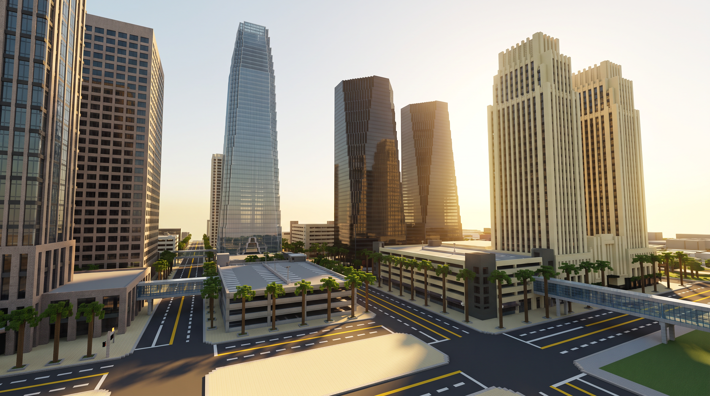
Chapter 03 · The Two-Layer City
Executive Summary
What this build is
The Houston tunnel system is the third identity in a three-location Minecraft architecture trilogy. Where Cheyenne Mountain Complex is the military, hardened, deep leg and SubTropolis is the industrial, raw, mined leg, Houston is the civilian, climate-controlled, retail-flavored leg — a network of subterranean pedestrian walkways at 20 feet below street level, linking 95+ city blocks of downtown Houston across more than six miles of corridor, used by an estimated 200,000 people on a typical weekday.
The build is a two-layer city. The above-ground layer is a 6×6 compressed grid of downtown Houston — four named anchor towers (Wells Fargo Plaza, JPMorgan Chase Tower, Pennzoil Place, the Esperson twins), 8–10 generic downtown towers, parking garages, the named street grid, the named skywalk network, palm trees, hot Houston sun. The below-ground layer is a 4×6 sample of the tunnel system at 6 blocks below street grade — four food courts, a standard climate-controlled corridor, the time-staggered cross-section of 1970s / 1990s / 2010s commercial interior design side by side, the chain-restaurant tenant mix, the almost-secret entrance paradox.
The soul, in one line
"Civilian, climate-controlled, retail-flavored, workday-only, two-layer city — 95+ blocks, 6 miles, 200,000 daily users, all under downtown Houston."
The 8 Tier-1 must-haves
Per the deliberation, these features carry the build:
Tier 1
1
The descent — 1970s lobby → floodgate → fluorescent tunnel
4:1 linear compression on the city block footprint. 1:1 on tunnel corridor cross-section (10–20 ft wide, 8–9 ft ceiling). 1:1 vertical (tunnel sits 6 blocks below street grade, the actual 20 ft).
Long axis N–S along Main / Fannin / Travis / Louisiana / Walker / Capitol. Cross streets: Rusk, McKinney, Dallas, Lamar.
Block Budget
~158,000 blocks (v2.0)
~3,000 blocks for the v0.1 MVP (Wells Fargo entrance + descent + first 1–2 corridor blocks) — captures the entire soul.
~25,000 for v0.5 (first food courts + tenant zones).
~120,000 for v1.0 (full tunnel sample). ~158,000 for v2.0 (full two-layer city with finishing).
The three identities, side by side
Dimension
Cheyenne Mountain
SubTropolis
Houston Tunnels
Soul
Hardened military bunker
Industrial warehouse / mine
Civilian commercial pedestrian network
Geology
4.5 acres in granite
270-million-year limestone
Wet clay & sand of the Texas Coastal Plain
Depth
1,800+ ft inside mountain
150+ ft below grade
20 ft below grade (1 story down)
Climate
Self-contained life support
Natural 65–70°F year-round
Mechanical 72°F year-round
Use
NORAD, classified
USPS, archives, film storage
Office-worker lunch rush, dry cleaners, barbers
Daily population
Classified
~1,500 workers
~200,000 daily entries (back-of-envelope)
Public access
None
None (secure industrial)
Open to the public 6 AM–6 PM Mon–Fri
Architecture
Blast doors, EMP shielding
Raw limestone, brutalist
1970s office-basement construction
Hours
24/7 / 365
24/7 / 365 (industrial)
Weekday business hours only
What it says
"We survive the end of the world."
"We use the earth as a warehouse."
"We use the basement as a parallel city."
The Houston-versus-the-other-two contrast
Where the Cheyenne build screams "military hardened" (granite-and-steel blast doors, granite andesite, 60+ ft of rock cover) and SubTropolis screams "industrial raw" (limestone pillars, exposed rock, brutalist utility), Houston is deliberately soft — the smooth white dropped ceiling, the painted concrete-block walls, the off-white VCT floor, the fluorescent troffers, the brand-color tenant awnings. The Houston replica should feel ordinary in the way a Houston office worker's daily commute is ordinary. The drama is hidden: the almost-secret entrance, the climate-control engineering, the lunch-rush shoulder-to-shoulder, the post-6 p.m. lockdown. The player should walk out of the Wells Fargo lobby and feel they have just stepped into a place that has been doing this every weekday for 90 years.
The 7 binding decisions
From the deliberation, the seven decisions that anchor every downstream design choice:
Sample footprint: 6 blocks N–S × 4 blocks E–W = 24 compressed city blocks (~80 m × 120 m), long axis along the Houston street grid.
Compression: 4:1 linear on city footprint, 1:1 on corridor cross-section, 1:1 vertical. The squeeze between street and tunnel ceiling is real.
Master-plan numbers: 95+ blocks, 6 mi, 200,000 daily users, 1930s dual origin, 20 ft depth, 72°F. All signage and master-plan documents use these figures.
Master-plan legend: [D] documented · [I] inferred from archetype · [X] invented. Every build element is tagged; the Esperson food court is the bar for invention.
Tier-1 must-haves: 8 features (see above); Tier-2 = 4 signature; Tier-3 = 2 flavor. Cuts documented: Harris County full build, St. Joseph full build, separate lunch-rush build, full tenant list.
Above-ground city: a Houston-vocabulary fictional downtown, not a literal replica. 4 named anchors + 8–10 generic towers + 2–3 parking garages + the named street grid + 4 skybridges.
No subway contamination, no mall contamination, no fictional lore. The Houston tunnel is a civilian workplace network, not a transit system or a destination mall.
Chapter 04 · Research Synthesis
History & Research
1930s: The dual origin
The Houston tunnel system did not start as a system. It started as two disconnected one-block tunnels, both built in the early 1930s by building owners, not the city.
Origin 1 · 1931
Ross Sterling's Fannin tunnel
Ross Sterling, publisher of the Houston Post-Dispatch and developer of the Sterling Building (1931), had his son-in-law and architect Wyatt C. Henderick build a tunnel beneath Fannin Street connecting two properties between Texas Street and Capitol Street. Sterling was also the 31st Governor of Texas.
The tunnel was private, utilitarian, and built by the building owner — exactly the pattern that defined the early system.
Origin 2 · 1935
Will Horwitz's "Uptown Center Project"
Entertainment entrepreneur Will Horwitz owned the Travis, Texan, and Uptown theaters. Air-conditioning all three required digging into their basements; he connected them with a tunnel and filled it with shops, restaurants, a penny arcade, and a German wine tavern — explicitly citing Rockefeller Center's underground concourse as his model.
The Texan Theater closed September 8, 1953, was demolished, and the tunnels "sat abandoned for years" until the 1970s revival.
These two early segments were disconnected. They were not yet a network — but the 1930s origin is the build's founding myth, honored with a combined plaque at the Wells Fargo entry: "Houston Tunnel System — Established 1930s. First tunnel: Ross Sterling under Fannin (1931) and Will Horwitz under Capitol (1935). Inspired by the Rockefeller Center underground concourse."
1940s–50s: From connection to network
1947 — A second tunnel connected a department store to its parking garage. The first explicit example of the parking-to-retail logic that defines the modern system.
1951 — The first tunnel linking two office buildings was built.
1956 — Architectural historian Stephen Fox identifies this as the moment a system of shared tunnels began: the Bank of the Southwest was linked to the 1010 Garage and the Mellie Esperson Building — the first documented intentional network connection in Houston.
1960s–70s: The Gerald D. Hines boom (the real signature era)
The decisive period for the modern tunnel system is the 1960s and 1970s, when real-estate developer Gerald D. Hines turned a small private network into a climate-controlled, retail-served, publicly accessible urban system. He added 27 major buildings to downtown Houston through this period. Sandra Lord — "the Tunnel Lady," who has led walking tours since 1991 — calls the result "the new tunnel."
By the mid-1970s, "two-and-a-half miles of tunnels snaked their way under Houston" (Reason, 1988). The Hines-era tunnels were built with air conditioning, retail bays, food courts, and public-facing access through the lobbies of new office towers, climate-controlled to around 72°F year-round — a Houston innovation since imitated by most U.S. downtowns.
Why 1970s is the visual identity, not 1930s
The 1930s origin is founding myth; the 1970s Hines era is the default visual. The build's signature look is 1970s office-basement construction: dropped acoustic-tile ceiling in a 2×2 or 2×4 grid, painted concrete-block walls in off-white, fluorescent or LED troffer lighting, VCT or terrazzo floor, 8–9 ft ceilings. The 2010s LED refresh at 1001 Fannin is the modern contrast; the build must show the time-staggered cross-section of 1970s / 1990s / 2010s commercial interior design side by side.
The modern system: 95+ blocks, 6+ miles, 200,000 daily
By the 1980s, the tunnel system had evolved from "a sterile walkway between parking garages and office buildings" into "a major retail area" (Reason, 1988). The 1990s and 2000s saw the system grow to its modern footprint of roughly 95 city blocks and six miles of corridor. The 2010s–2020s brought continuous tenant turnover: Pennzoil Place, Wells Fargo, JPMorgan Chase Tower, 1001 Fannin, and 1001 McKinney have all refreshed their food courts.
Footprint
95+
city blocks (consensus across all sources)
Length
6 mi
9.7 km of connected corridor (one outlier says 7 mi)
Depth
20 ft
6 m below street level (1 story down, 1:1 vertical)
Daily users
200K
back-of-envelope estimate from downtown workforce
Access
80+
building access points; only 2 direct street entries
In June 2001, Tropical Storm Allison dropped 20–30+ inches of rain on the Houston metro, flooding thousands of basements including several major downtown office basements and tunnel segments. The flood became the textbook case study in below-grade flood risk. Building managers now require:
Flood gates or removable flood barriers at every direct street access (Wells Fargo Plaza, McKinney Garage).
Submersible sump pumps at low points.
FEMA-compliant dry-floodproofing of new construction (after Allison, the City of Houston tightened its floodplain construction rules).
The floodgate is the build's signature engineering detail. The 2001 Allison marker is a faded-reference plaque. Both are visible to the player at the Wells Fargo direct entry.
Visual references: what the build draws on
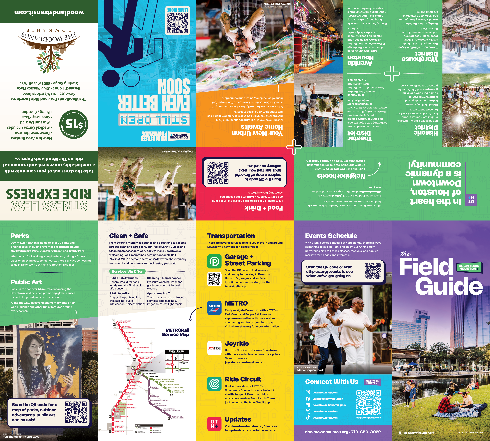
Figure 4.1 · The 2025 Downtown Field Guide & Tunnel Map (front side). The most current published wayfinding product. The system-wide tunnel map overlaid on a downtown walking map. The build's "today" reference. Source: Downtown Houston District, Fall 2025 edition. Used under the "this is the system I am building" framing.
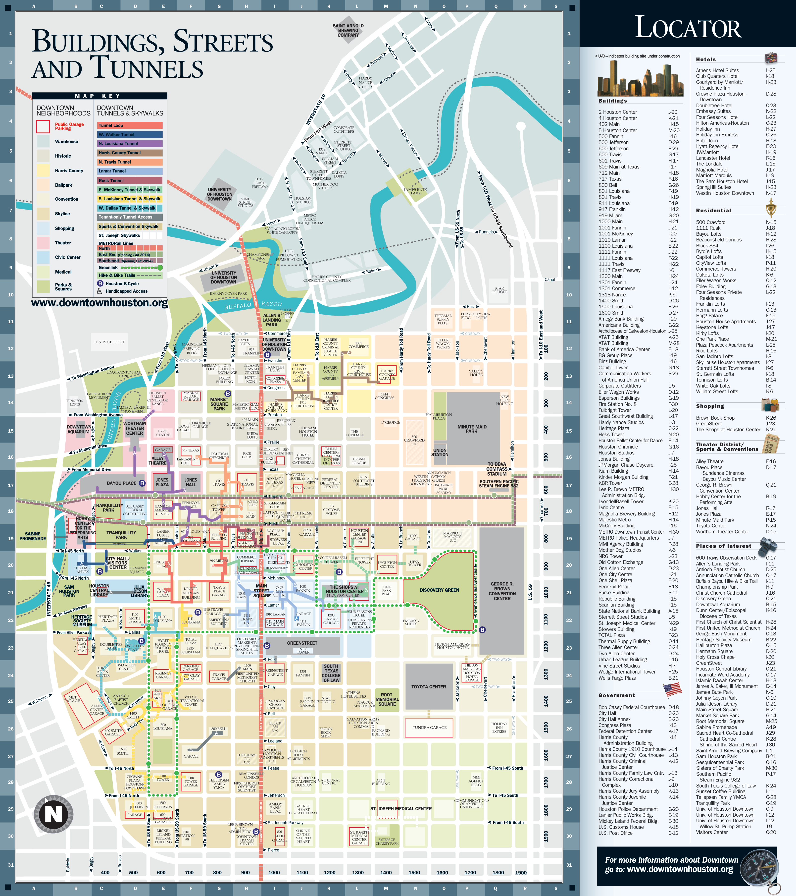
Figure 4.2 · The Cameron Management 2015 "Buildings, Streets & Tunnels" detailed map (24×27 inch). The most detailed publicly available tunnel locator with a labeled grid (A-15 through P-29) for every connected building. This map is the build's layout truth: every Cameron 2015 grid label is used as a build-block identifier in this master plan. The named-segment taxonomy (Downtown Tunnel Loop, W. Walker, N. Louisiana, N. Travis, Lamar, E. McKinney) is preserved in the build. Source: Cameron Management.
What the build canon uses, and what it doesn't
Used: 95+ blocks, 6 mi, 20 ft below grade, 200,000 daily users, 1930s dual origin, 72°F climate, weekday business hours only, the 6 named segments, the 4 food court archetypes, the 2 direct street entries, the 80+ access points, the 1970s / 1990s / 2010s time-staggered cross-section.
Not used: the 7-mile outlier (AMLI), the 250,000+ daily users "press release" number, "world's largest underground pedestrian tunnel" (false — Montreal's RÉSO at 33 km is the world leader), "world's largest subterranean retail space" (false — SubTropolis at 55 million sq ft is the world leader). The build canon uses the consensus number on each operational fact and tags the discrepancies explicitly when they appear as signage.
Chapter 05 · The Cultural Identity
The Soul of the Place
The visitor's first thirty seconds
A visitor steps out of a 1970s marble-and-granite office-tower lobby and descends an interior stair or escalator into a corridor that is cool, dry, beige, and entirely artificial — 72°F, fluorescent-lit, dropped-ceiling, concrete-block walls painted off-white, VCT or terrazzo floor. There is no sky, no window, no weather. The air smells faintly of HVAC and (if you are near a food court) of coffee, fryer oil, and cinnamon from a kolache kiosk. A corridor of small storefronts — Chick-fil-A red, Subway green, a barber pole, a dry cleaner, a credit union — opens onto the same beige hallway that runs, unbroken, for six miles under 95 city blocks of downtown Houston. The single feeling is: you have just stepped into a second city that nobody told you about, and the people walking past you in their office IDs have been doing this every weekday at lunchtime for years. It is mundane, it is secret, and it is one of the largest pedestrian networks in the United States — all at once.
The "almost-secret" entrance paradox
The single most Houston-tunnel architectural fact is the entrance paradox: only Wells Fargo Plaza (1000 Louisiana) and McKinney Garage on Main (930 Main) offer direct street-level access. Every other of the 80+ access points is inside a private office-tower lobby, accessed by an interior stair, escalator, or elevator that starts in the building's marble-and-granite lobby. The first-time visitor does not know the system exists; the second-time visitor uses a specific office building's lobby as the entry; the regular uses the Wells Fargo door.
The architectural consequence is that the tunnels are not legible from the surface. There is no grand civic stair, no plaza-level entrance pavilion, no signage you can read from across the street. The only surface presence is the small T-marker plaque at the curb, easy to miss. This is the almost-secret quality, and it is the most Houston-tunnel fact there is.
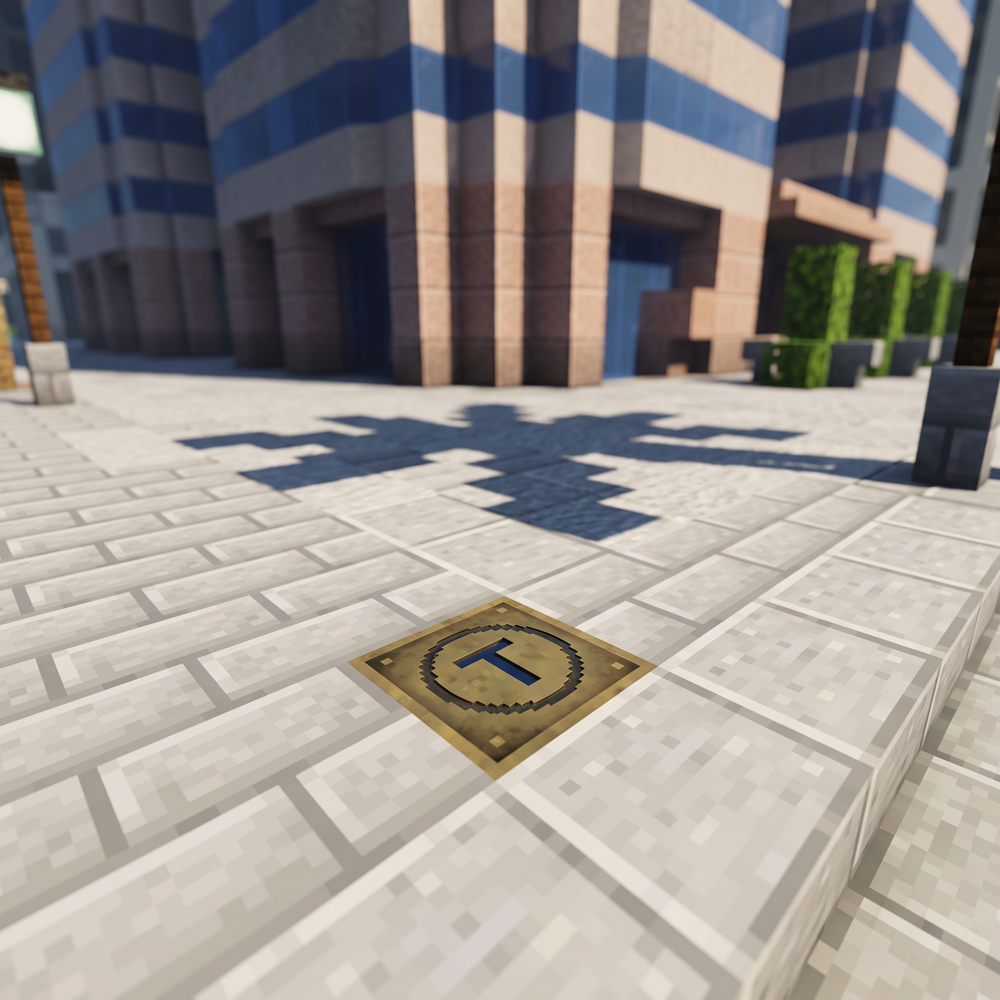
Figure 5.1 · The T-marker — the only on-street indication. A small blue "T" inside a circle, embedded in the sidewalk at the curb outside Wells Fargo Plaza and McKinney Garage. Easy to miss, deliberate. The Houston convention.
Why Houston? The climate problem Houston built an answer to
Houston is one of the most thermally uncomfortable major cities in the United States. The mean July high is 94.5°F (34.7°C), and the dew point regularly sits in the mid-70s°F, making summer air-feel temperatures routinely exceed 105°F. The comfortable outdoor walking season is roughly November through March.
The Houston tunnel system is, fundamentally, a climate-controlled pedestrian network that allows the downtown office workforce to avoid Houston's heat, humidity, and frequent summer thunderstorms. (The tunnels are also, ironically, at flood risk — see the 2001 Allison flood.) The build must make the surface feel like the enemy and the 72°F basement feel like the refuge.
The "Office Worker" perspective: the daily commute
The Office Worker on the deliberation panel articulated the daily routine:
I see a glass revolving door at Wells Fargo, an elevator bank, an interior stair down, a long corridor with a dropped ceiling, the Esperson food court on my left with Chick-fil-A on the corner, the "Tunnel → Pennzoil Place" sign, the corridor narrows, a ramp up to the Pennzoil lobby, two Philip Johnson mirrored towers above my head visible through the lobby glass, back down to the tunnel, the "Tunnel → 1001 Fannin" sign, the corridor widens at the Lamar Tunnel food court, Blackwater Coffee, Charlies BBQ, lunch. I see the daily commute.
The build must render that commute, not a generic mall. The defining experiences are the lunch rush (11 a.m. to 1 p.m., shoulder-to-shoulder in the food court) and the lock-up (6 p.m., lights dim, security-mode, the corridor becomes back-of-house for the office buildings above).
Three iconic must-sees, ranked
#1 · The signature
Esperson food court
The archetype. Long, narrow corridor under the Niels Esperson Art Deco twin towers. A single row of storefronts on each side, off-white dropped ceiling with fluorescent tubes, beige terrazzo floor, painted concrete-block walls. Every other food court in the system gets compared to this one.
#2 · The famous entry
Wells Fargo direct street access
One of only two direct street-level entries in the entire 95-block system. The most-used tourist/lunchtime entry. 1980s granite-and-glass office-tower lobby, with the building directory, the elevator bank, the interior stair down, and the T-marker plaque at the curb.
#3 · The other entry
McKinney Garage direct access
The other direct street-level entry. Reads as "parking garage with shops," not "tunnel entrance." A 1970s open-deck garage with a ground-floor concourse, an interior stair down to the McKinney Place food court. The visual contrast with Wells Fargo is the point.
The visitor experience, stage by stage
Stage
What the player sees
What the player feels
1. Above-ground city
1970s–90s American downtown — glass-and-steel office towers, palm trees, surface parking, skybridges crossing streets at the second floor.
Hot, sunny, palm-tree-flavored, light level 15. The biome is hot plains or savanna.
2. The descent
Glass revolving door at Wells Fargo → marble lobby → building directory → bank of elevators → interior stair down. The lobby is quiet and formal.
A temperature change. A light change. A step into a different world.
3. Tunnel reveal
Standard corridor — white dropped ceiling, fluorescent troffers, off-white painted concrete-block walls, beige VCT floor. A backlit "Tunnel →" sign at the first intersection.
Cool, dry, dim, quiet, empty. Closer in feel to an empty airport concourse at 3 a.m. than to a shopping mall.
4. The food court
Esperson, Pennzoil, 1001 Fannin, or McKinney Place. Communal tables, kitchen-exhaust grilles, brand-color tenant signage. Shoulder-to-shoulder at lunch, empty at 3 p.m.
Loud, crowded, warm (in the social sense), kitchen-exhaust-scented. Alive in a way the corridor is not.
5. The skybridge
Glass-enclosed second-floor connector between two towers, crossing a named street. The visual shock of natural light after the fluorescent tunnel.
Daylight, the visual shock of natural light, a sense of the city as a 3D network.
6. The exit
Passes through the floodgate, the 6-inch raised concrete threshold, the glass revolving door. T-marker plaque on the sidewalk.
A return to the surface, a temperature change, a light change, a recognition of the almost-secret quality.
7. The wayfinding moment
Slightly lost. Uses the printed map, asks a NPC, navigates by tenant landmark ("turn left at the Chick-fil-A").
Chronic. The wayfinding is the chronic weak point of the real system. The build replicates this honestly.
What makes it different from other underground networks
The Houston tunnel system is one of several large underground pedestrian networks in North America. It is the only one that has all of the following properties at once:
Privately owned in small segments, by each building above. No central tunnel authority. The city of Houston owns none of it.
A civilian retail concourse, not a transit system. PATH, RÉSO, and Pedway are mixed pedestrian/transit; Houston is only pedestrian, and the retail is only for the office workforce above.
Squeezed 20 ft below street level, not deep. The system is shallow, wet, and flood-prone — a basement network, not a deep excavation.
A time-staggered cross-section of 1970s–2020s commercial interior design, because no master plan and no central owner.
Only two direct street-level entries in 95 blocks.
A climate-controlled environment at 72°F specifically to escape Houston's brutal summer heat.
A workday-only city (Mon–Fri 6 a.m. – 6 p.m.).
Chapter 06 · Visual Library
Visual References
A curated gallery of the best public-domain and Creative-Commons reference images for the build. These are the visuals the Visual Renderer studied to produce the 20 masterplan renderings in Chapter 12. Captions explain what each one shows and how it informed the Minecraft block spec.
Figure 6.1 · Downtown Field Guide & Tunnel Map, Fall 2025 (front side, downtown walking map with tunnel overlay). The system's only system-wide wayfinding product. The build references this in the "Downtown Field Guide & Tunnel Map" wall banner and the printed-map standee at the Wells Fargo entry. CC-restricted tenant cover images prevent redistribution of the back-side tenant directory, but the front-side map is a primary visual reference for the named segments.Figure 6.2 · Cameron Management 2015 "Buildings, Streets & Tunnels" (24×27 inch detailed map). The most detailed publicly available tunnel locator with a labeled grid (A-15 through P-29) for every connected building. The architect's primary map source for the Minecraft block-by-block layout. Every Cameron 2015 grid label is a build-block identifier in this master plan.
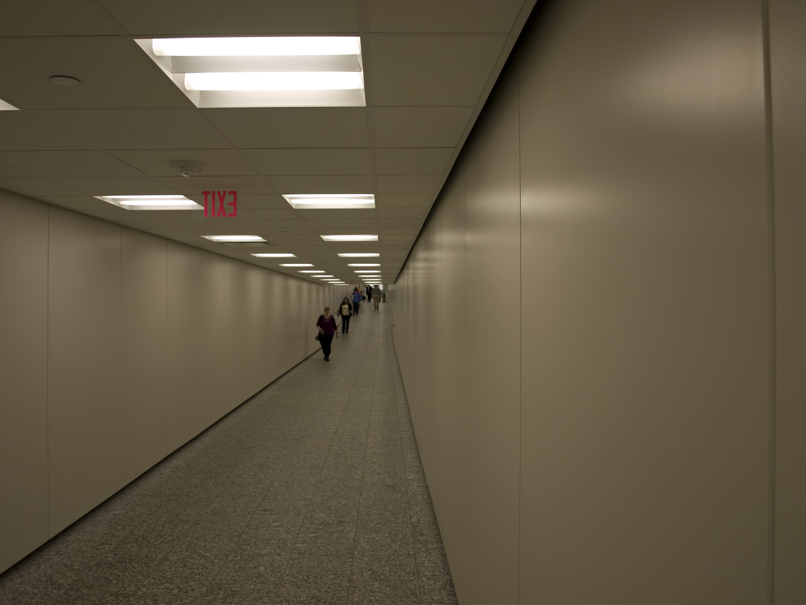
Figure 6.3 · Wikimedia Commons — typical tunnel corridor (CC BY-SA, uploaded by Whpq, 2008). The highest-resolution public-domain photo of an actual Houston tunnel corridor. A 3,648 × 2,736 JPEG showing a curved tunnel ceiling, tiled walls, lit storefronts, and the characteristic band signage. This is the interior hero shot — the visual reference for the build's 1970s default corridor spec. Used as the master plan's primary interior reference.
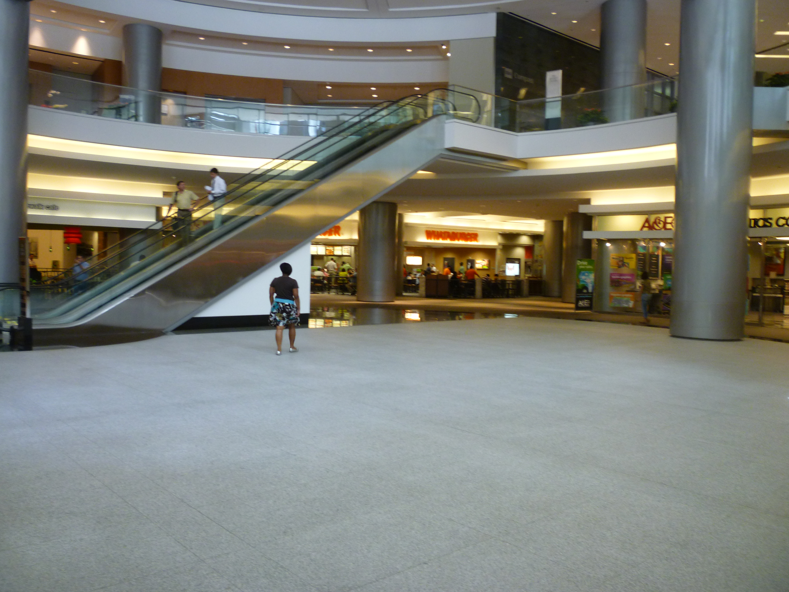
Figure 6.4 · Wikimedia Commons — tunnel plaza/rotunda (CC BY-SA). A 4,000 × 3,000 JPEG of a plaza at the intersection of two tunnel segments, with shops and a column. Used as the tunnel rotunda / node reference. Demonstrates the rounded corridor geometry and the painted-concrete-block walls at a food court entry.
Figure 6.5 · Will Horwitz's 1930s Houston theaters (historical). The Travis, Texan, and Uptown theaters that Horwitz connected with his 1935 "Uptown Center Project" tunnel. The site under what is now the JPMorgan Chase Tower. The Texan Theater closed 1953, was demolished, and the tunnels "sat abandoned for years."Figure 6.6 · 1950s downtown Houston (historical). The era when the Bank of the Southwest / 1010 Garage / Mellie Esperson Building linkage (1956) became the first intentional network connection. The architectural style of the era informs the build's 1950s-era minimal corridor segment.
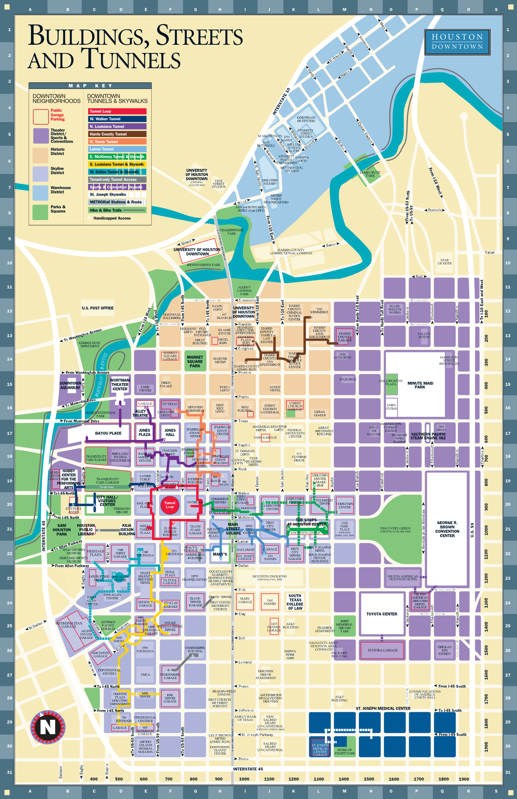
Figure 6.7 · City of Houston "Buildings, Streets and Tunnels" locator map (2015, 11×17 PDF). The original 2015 official tunnel map. A simplified version of the Cameron Management detailed map. Useful for the build's public-facing wayfinding standee at the Wells Fargo entry.
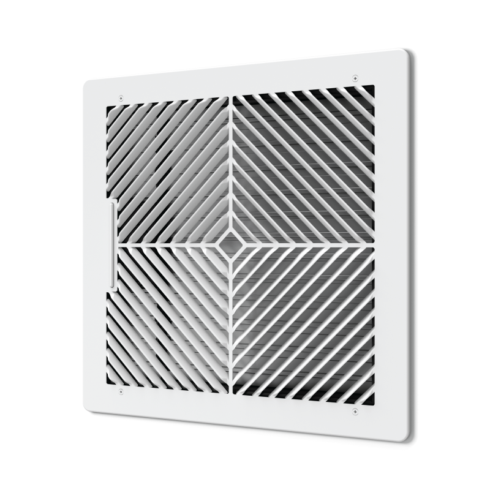
Figure 6.8 · HVAC and lighting infrastructure in a typical tunnel ceiling. Reference for the dropped-ceiling engineering layer: ductwork, conduit, fire-sprinkler risers, the underside of the street. The build's "1950s minimal corridor" segment exposes this infrastructure intentionally.
All 20 masterplan renderings — concept visualizations of what the build is supposed to look like once placed — are presented in full in Chapter 12, with their rendering prompts, intended use, and the rendering itself.
Chapter 07 · Four Voices, Seven Decisions
The Deliberation
Four voices argued what a Minecraft replica of the Houston downtown tunnel system should be. The real system is unrenderable at any literal scale: 95+ city blocks, six miles of corridor, 80+ access points through private office-building lobbies, two direct street-level entries, one iconic food-court archetype, and a daily rhythm of 200,000 office workers who treat it as their climate-controlled commute between building lobbies and lunch counters. The above-ground city is a real city — Houston's CBD, with its named skywalk network running parallel to the tunnels one story up. Both layers have to be built, and the transition between them has to be the design's most important decision.
The panel
Realist
Public record only
Wants only what's publicly documented. Allergic to subway-and-mall contamination. Cites sources; defends the named-segment taxonomy and the dual-origin story.
Gameplay Advocate
Walkable end-to-end
Wants a build a Minecraft player will actually walk from end to end in 20–30 minutes. Pulls hard against museum-scale 6×8 sample. Tier-1 must-haves must earn their visit.
Urban Planner
Two-layer city
Wants the city above and the layer below to read as one place. Above-ground is not a backdrop — it is the primary layer. Houston-vocabulary, not literal replica.
Office Worker
Daily commute feel
Has actually commuted through the real tunnels. Knows the lunch rush, the lock-up, the chain restaurants, the Wells Fargo direct-entry hack, the climate feel. Renders that commute, not a generic mall.
Topic 1: Scale compression
At 1:1 (1 block = 1 meter), the build is 95+ city blocks and 6 miles of corridor — roughly 9,700 blocks of walkway, or a 38-minute continuous walk. The research suggests a "6–12 city blocks" sample as a realistic target. The Cameron Management 2015 detailed map gives a labeled grid of every connected building (A-15 through P-29).
Resolution. 6 blocks N–S × 4 blocks E–W = 24 compressed city blocks (~80 m × 120 m, ~9,600 blocks²), with the long axis running along the real Houston street grid. The four food courts anchor the four quadrants. Linear compression on building footprint is 4:1; corridor cross-section is 1:1; vertical is 1:1 (tunnel sits 6 blocks below grade, exactly as the real system does). Effective player time from Wells Fargo entry to the farthest food court (McKinney): 2–3 minutes of walking.
Topic 2: Must-haves vs. cuts
The research lists 13 iconic features. The panel committed to 8 Tier-1 must-haves, 4 Tier-2 signature features, 2 Tier-3 flavor features, and named cuts for the rest.
Tier
Feature
Why this tier
1
The descent (lobby → floodgate → fluorescent tunnel)
The single most Houston-tunnel experience there is.
1
Four food courts: Esperson, Pennzoil, 1001 Fannin, McKinney
One per quadrant. Food courts are what every visitor remembers.
1
Wells Fargo Plaza street-level entrance
The famous direct public access. Most-used tourist/lunchtime entry.
1
McKinney Garage direct access
The other public entry. Visual contrast with Wells Fargo is the point.
1
Standard climate-controlled corridor
The single most common visual. 80% of the player's time in the build.
1
Skybridge crossing a named street
The above-ground companion. Without it, the tunnel is a stand-alone underground mall.
"95+ / 6 mi / 200,000 daily users" interpretive panel
The lore, framed honestly as back-of-envelope.
Cuts (no build): Harris County tunnel as a full build (one faded-reference sign at the build's edge). St. Joseph Medical Center skywalks (one sign). A full multi-tenant directory (10–12 named tenants + the rest as "Vacant / For Lease"). A separate "lunch rush" build (the food courts are the lunch rush). A flooded corridor scene (the floodgate is enough). The Esperson / Mellie Esperson Art Deco tower exteriors in full architectural detail.
Topic 3: Source conflicts
The research flagged five real conflicts. The panel resolved them with the consensus figure on each.
Conflict
Resolution
Why
Block count
95+ (the "+" is honored)
All major sources agree; "100+" is older, less precise.
Length
6 mi (not 7)
AMLI's 7 mi is the only outlier and is explicitly flagged in the research.
Daily users
200,000 (not 250K+ or 150K)
The 250,000+ figure "feels like a press release" (Office Worker). 150K feels low.
Founding
1930s, dual origin (Sterling + Horwitz)
Both stories are documented. One combined plaque at the Wells Fargo entry.
Depth
20 ft (not 30 ft)
30 ft is depth-to-basement-floor, not tunnel-floor-to-grade. AMLI clarifies this.
Topic 4: Creative license boundaries
Most tenant interiors are private. The Cameron 2015 map shows building footprints and named segments but not interiors. The Esperson food court is the most-documented zone; everything else is partially-documented or undocumented. The panel committed to a three-tag legend:
[D]Documented in the research report or in the Cameron 2015 map (cite source).
[I]Inferred from industry archetype for the tenant type (cite the archetype: "1970s commercial basement fit-out," "Chick-fil-A prototype," "dry cleaner prototype," "fast-casual food court counter").
[X]Invented by the designer to fill a gap (describe the rationale).
Standard of invention (the Esperson bar). An invented interior must (1) match a documented tenant's actual business activity, OR follow a generic commercial fit-out archetype; (2) follow one of three documented eras (1970s Hines / 1990s refresh / 2010s LED refresh); and (3) clear the Esperson bar — if a former downtown Houston office worker walked in, they would not laugh.
Topic 5: Easter eggs
The Realist resisted subway / mall / fictional contamination. The Gameplay Advocate loved easter eggs. The Urban Planner wanted them subtle. The Office Worker wanted respect for the actual daily routine. The resolution: prominent easter eggs (player-facing) + subtle "faded references" (single nod, not a full build) + atmospheric easter eggs (texture, not pinboards).
Out (zero build, no reference)
Subway / transit imagery (no "MTA," "Metro," "Station," "Platform," "Line," "Track," "Times Square," "Grand Central"). Mall contamination (no central atrium, no fountain, no escalator banks as features, no "Shoppers World," no "Welcome to the Galleria," no anchor-store framing). Generic underground / generic dungeon (no "secret lair," no "hidden city," no Indiana Jones imagery). Fictional lore that is not in the documented history (no mob tunnels, no haunted sections, no Cold War bunkers). Anything that requires the player to know NYC, London, Tokyo, or Montreal (PATH / RÉSO) to recognize.
Topic 6: Above-ground city integration
The user said "build a city above the Houston tunnel system." The above-ground city is a real city (skyscrapers, parking, the way Houston has a parallel life below street level). The Realist wanted full Houston replica. The Gameplay Advocate wanted minimal. The Urban Planner wanted city-design coherence. The Office Worker wanted the daily commute feel.
Resolution. A representative downtown Houston that uses Houston's real urban-design vocabulary. The four anchor buildings (Wells Fargo, JPMorgan Chase, Pennzoil, Esperson) are rendered in compressed scale with the documented architectural signatures. Surrounding the four anchors are 8–10 generic-but-realistic downtown office towers in a uniform cornice line, plus 2–3 parking garages, the named skywalk network (one skybridge per quadrant), and the named street grid (Main, Fannin, Travis, Louisiana, Walker, Capitol on the long axis; Rusk, McKinney, Dallas, Lamar on the cross axis).
Topic 7: Combined-complex integration
The Houston tunnel system is the urban pedestrian leg of the combined-complex trilogy. The three sites are:
Cheyenne Mountain — military, secure, single-use, north of the valley, no direct connection to Houston.
SubTropolis — suburban industrial, civilian commercial, south of the valley, connected to Houston via the public shaft.
Houston tunnel system — urban pedestrian, downtown office, in the valley, the primary layer of the Houston site.
The above-ground city is sized to receive the SubTropolis public shaft (~5×5 blocks cross-section) at a "Combined Complex Transit Hub" plaza at the east edge, and the Cheyenne Mountain service tunnel (~6×5 blocks cross-section) at a service sub-basement at the north edge. The Houston tunnel system is physically separate from both — it is a civilian workplace network with its own hours, its own access rules, and its own two public entries. The combined-complex fictions are clearly marked as project fictions [X].
The myth-busting section
Public lore vs. documented record
"Largest underground pedestrian tunnel system in the U.S." — Defensible by block count and pedestrian-miles, full stop. The world leader is Montreal's RÉSO (33 km, 41+ stations, 3.3 million sq ft). PATH in Toronto is also larger by length. The build uses this exact framing.
"Connects 95 city blocks." — Confidently true. The build uses 95+ with the "+" honored.
"Open only on weekdays." — True. The build uses 6 AM – 6 PM Mon–Fri on signage.
"The world's largest subterranean retail space." — False. The world leader is SubTropolis in Kansas City (the sister project in this masterplan) at 55 million sq ft. Houston's tunnels are pedestrian connectors with retail bays, not a single large subterranean complex. The build uses the asterisk-style correction as a small bronze plaque in the Pennzoil Place underground: "Houston has the largest underground pedestrian tunnel system in the United States — 95+ city blocks and 6 miles of corridor. The world leader is Montreal's RÉSO (33 km, 41+ stations)."
"The 1930s origin date." — True, with two simultaneous origin stories. Ross Sterling and Will Horwitz, both 1930s, not connected to each other. The build honors both with one combined plaque.
"Privately owned in small segments." — True. Every primary source confirms building-by-building ownership.
"Two street-level entrances." — True. Wells Fargo Plaza and McKinney Garage.
Chapter 08 · The City, the Tunnels, the Coordinates
Site Plan
The build in one paragraph
The visitor approaches a sun-blasted, palm-tree-lined Houston downtown grid — surface parking, one-way streets, glass-and-steel office towers, skybridges crossing streets at the second floor. They enter a 1970s granite-and-glass office-tower lobby, descend a short interior stair or escalator, and arrive in a beige, fluorescent, climate-controlled, dropped-ceiling corridor that runs for six blocks of compressed city under the surface. The corridor is a 20-foot, 8-foot-tall, painted-concrete-block, VCT-floored pedestrian network connecting 24 compressed city blocks of downtown, with four food courts as quadrant anchors and two direct street-level entries. The build is small enough to walk in 2–3 minutes from one end to the other, and large enough to feel like a city.
World origin and compass
Reference
Value
World origin
(0, 64, 0)
Description
Wells Fargo Plaza street entrance — at the SE corner of the build, on the south face of the Wells Fargo tower, on the sidewalk of Louisiana Street, at street level. The T-marker plaque is at (0, 64, 0).
Compass
North = −z, East = +x, Up = +y. Minecraft convention.
Street level
y = 64
Tunnel floor
y = 58 (6 blocks below street level, 1:1 vertical, the actual 20 ft)
Tunnel ceiling (corridor)
y = 61 (3-block clear height, 10 ft)
Tunnel ceiling (food court)
y = 62 (4-block clear height, 13 ft)
Skybridge level
y = 68
Build extent
Above-ground city (6×6 = 36 compressed blocks)
x = 0 to 138, z = 0 to −138
Total footprint: 138 m × 138 m ≈ 19,000 blocks². Larger than the tunnel sample (4×6) by 2 columns on the west side. The 2 extra west columns (cols 5–6) are the above-ground buffer — generic downtown towers, surface parking, and the city street grid, but no tunnels underneath. Matches the real system: not every downtown tower is connected to the tunnel network.
Tunnel sample (4×6 = 24 compressed blocks)
x = 0 to 92, z = 0 to −138, y = 58 to 64
Total tunnel footprint: 92 m × 138 m ≈ 12,700 blocks². The 4 food courts anchor the 4 quadrants. Wells Fargo Plaza is not a food court — it is the public entry at the SE corner of the build.
The 4 named anchor towers
Building
Position (x, y, z)
Height
Compressed from
Architectural signature
Wells Fargo Plaza
(10, 64, −10)
~70 blocks
71 stories (real)
Glass-and-granite office tower, plaza, direct-access stair. The most-rendered named building.
JPMorgan Chase Tower
(33, 64, −110)
~80 blocks
75 stories (real)
The tall one. Originally the 1935 Will Horwitz Uptown Theater site.
Pennzoil Place (2 towers)
(79, 64, −55)
~50 blocks each
36 stories × 2 (real)
Philip Johnson's mirrored trapezoidal towers. Densest food court underground.
Esperson (2 towers)
(56, 64, −55)
~35 and ~30 blocks
28 stories (Art Deco twins)
Niels Esperson's Art Deco towers. The archetype food court under them.
The 4 food court quadrants
Quadrant
Cols
Rows
Food court
Above-ground anchor
Q1 (SE)
1–2
1–3
1001 Fannin (Lamar Tunnel) — the modern refresh
1001 Fannin, Wells Fargo Plaza
Q2 (NE)
1–2
4–6
McKinney Place (E. McKinney Tunnel) — the public-entry food court
McKinney Garage
Q3 (SW)
3–4
1–3
Esperson (N. Travis Tunnel) — the archetype
Esperson, Pennzoil Place
Q4 (NW)
3–4
4–6
Pennzoil Place (N. Louisiana Tunnel) — the densest
JPMorgan Chase Tower
The street grid (Houston CBD names, compressed positions)
Position: (−12.5, 64, −55), at street level. Plaza design: open plaza with a glass-and-steel canopy, a stair down, a turnstile, a security guard booth, and a "Combined Complex Transit Hub — SubTropolis Public Access" sign. Cross-section: 5 × 5 blocks. Travel time to SubTropolis: ~10 minutes by elevator. Does not connect to the Houston tunnels.
Cheyenne service tunnel
Runs at 150+ ft depth
Position: (40, −86, −134) — about 150 blocks below street level, far below the Houston tunnels at 20 ft. Service sub-basement with a security gate and a "Service Tunnel — Cheyenne Mountain Complex — Authorized Vehicles Only" sign. Cross-section: 6 × 5 blocks. Does not pass through the Houston tunnels.
The two-layer contrast (this is the design's signature)
Where Cheyenne's above-ground site is a mountain and SubTropolis's is a flat industrial plain, the Houston above-ground is the city. The build's defining moment is the contrast between the two layers, the same visitor can see in the same five-minute walk:
The Houston tunnel system is the civilian, climate-controlled, retail-flavored, workday-only, two-layer city. It is the third identity in the trilogy — not a hardened military bunker (Cheyenne Mountain), not an industrial mine (SubTropolis), but the underground-basement-as-parallel-city. It is mundane, it is secret, and it is one of the largest pedestrian networks in the United States — all at once. The single feeling the build must produce: you have just stepped into a second city that nobody told you about, and the people walking past you in their office IDs have been doing this every weekday at lunchtime for years. The above-ground Houston summer (94.5°F, dew point in the mid-70s) is what the system is answering; the build must make the surface feel like the enemy and the 72°F basement feel like the refuge.
Master block palette (the 4 eras side by side)
The Houston tunnel palette is narrow and specific: cool neutrals (white, cream, light gray, beige) punctuated by the bright primary colors of tenant signage. The palette is the inverse of the Cheyenne (granite-and-steel blast-resistant) and SubTropolis (raw limestone) palettes. Every block on this list is approved for the Houston build; any block not on this list requires design-team approval.
71-story postmodern office tower (Skidmore, Owings & Merrill, 1983). One of the two direct street-level entries to the tunnel system. ~70 blocks tall. The signature feature is a granite plaza at the corner of Louisiana and Rusk: polished_andesite pavers, a low stone_brick_wall edge, a jungle_log palm cluster, a public bench. The lobby is the build's most-polished interior.
JPMorgan Chase Tower · 600 Travis
The tall one, 1982
75-story tapered modernist tower (I.M. Pei, 1982), the tallest building in Houston. ~80 blocks in the build. Site of the original Will Horwitz 1935 Uptown Theater (Texan Theater / Uptown Theater cluster), demolished 1953. The lobby is a polished_andesite and quartz_pillar grandeur — the most public of the four lobbies.
Pennzoil Place · 711 Louisiana
Mirrored trapezoids, 1975
Two mirrored trapezoidal towers (Philip Johnson, 1975). The most architecturally distinctive of the four anchors. Two towers, ~50 blocks each. black_concrete shell with black_stained_glass_pane mirrored curtain wall, stepped setbacks (the trapezoid signature). A glass-enclosed lobby bridge at the second floor connects the two towers. The densest single food court in the tunnel system is below.
Esperson · 808 Travis / 815 Walker
Art Deco twins, 1929 / 1940
Two Niels Esperson Art Deco towers. ~35 and ~30 blocks tall. quartz_block shell with smooth_quartz_stairs Art Deco cornice ornamentation, quartz_pillar vertical pilasters, stepped parapets. The Esperson food court is below 808 Travis — the build's signature.
The Wells Fargo street entrance (the iconic moment)
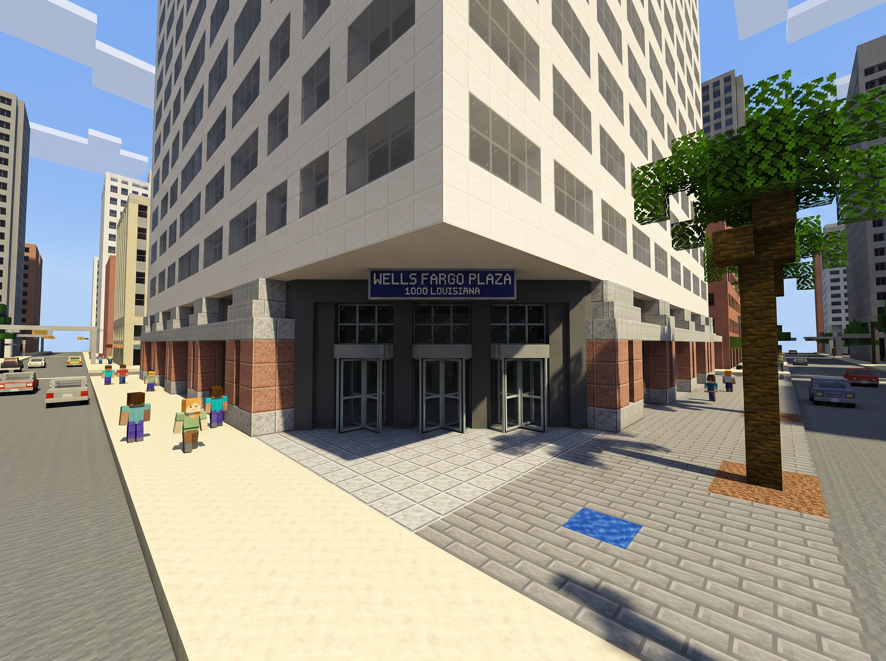
Figure 9.1 · Wells Fargo Plaza street entrance (1000 Louisiana). One of only two direct street-level entries in the entire 95-block system. The most-used tourist/lunchtime entry. 1980s granite-and-glass office-tower lobby, with the small T-marker plaque on the sidewalk. The almost-secret feel — the surface is ordinary, the lobby is grand, the descent is the surprise.
Lobby elements: Glass revolving door or security turnstile at street level. Lobby with marble or granite floor, building directory on the wall. Bank of 4 elevators (iron_door, 2-block-wide × 3-block-tall, iron_block-framed). Interior stair (4-block-wide polished_andesite_stairs, 6 blocks deep, dark_oak_fence handrail). Escalator alternative (light_gray_concrete housing + smooth_stone_slab steps).
Signage elements:
"200,000 daily users" — large, on the main entry sign at the Wells Fargo direct access. The single most important number for the build.
"95+ city blocks · 6 miles · 20 ft below grade" — on the same entry interpretive panel, the three operational stats.
"Wells Fargo Plaza — Direct Street Access" — at the entrance, with a "Free public access during business hours" sub-sign. The famous direct-access hack.
1930s dual-origin plaque:"Houston Tunnel System — Established 1930s. First tunnel: Ross Sterling under Fannin (1931) and Will Horwitz under Capitol (1935). Inspired by the Rockefeller Center underground concourse."
T-marker plaque at the sidewalk curb at (0, 64, 0) — small, blue, "T" inside a circle, the Houston convention.
The McKinney Garage direct access (the other entry)
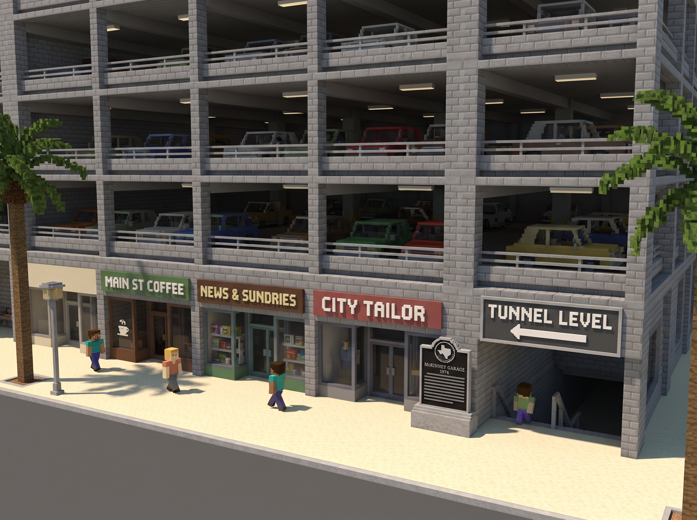
Figure 9.2 · McKinney Garage direct access (930 Main). The other direct street-level entry. Reads as "parking garage with shops" rather than office-tower lobby. 1970s open-deck parking garage facade, ground-floor retail concourse, T-marker plaque at curb. The visual contrast with Wells Fargo is the point.
The lobby-to-tunnel descent (the integration moment)
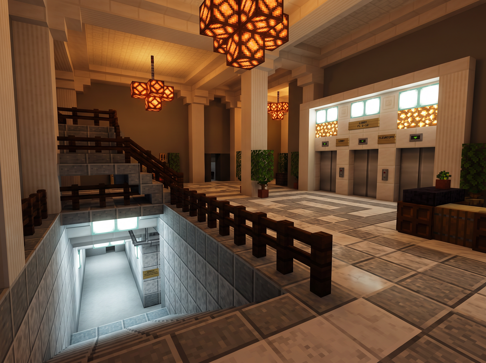
Figure 9.3 · The lobby-to-tunnel descent. Looking down an interior stairwell or escalator shaft from a polished 1980s office-tower lobby (marble/granite, building directory, elevator bank) into the basement tunnel corridor below. The transition from natural light to fluorescent. The visual shock of going from marble to beige. The "shadow city" reveal. The single most Houston-tunnel architectural moment.
The standard tunnel cross-section (the dominant visual)
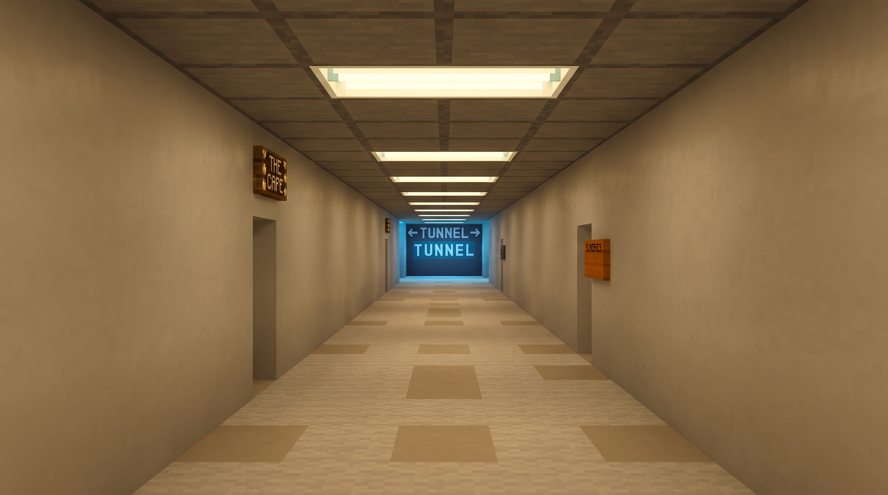
Figure 9.4 · The standard 1970s-Hines-era tunnel corridor (the dominant visual). Painted concrete-block walls in off-white, acoustic-tile dropped ceiling in a 2×4 grid, fluorescent-troffer lighting strips, beige VCT or terrazzo floor, 10–20 ft wide, 8–9 ft ceiling. A single "Tunnel →" backlit blue band sign visible at a far intersection. The signature image of the system. The single most-recognizable Houston tunnel image.
Block spec (1970s default):
Walls: white_concrete (2 blocks thick on each side), with a light_gray_concrete accent stripe (1 row of single-block) every 7 blocks at chair-rail height.
Floor: white_wool (VCT proxy) with a polished_andesite (terrazzo) border 1 block wide on each side, every 4 blocks.
Ceiling: smooth_stone_slab (dropped acoustic-tile proxy) at y = 61 (3 blocks above the floor). T-bar grid implied by a 1-row light_gray_wool accent every 4 blocks.
Lighting: sea_lantern (fluorescent troffer proxy) embedded in the ceiling at 4-block intervals along the corridor centerline.
Tenant storefronts: every 6–10 blocks, a tenant bay opens on one or both sides. iron_bars (window frame) + light_gray_concrete (door frame) + backlit redstone_lamp sign band above (blue_concrete background + white_concrete letters).
HVAC grilles: an iron_trapdoor (closed) every 12 blocks, embedded in the ceiling.
The 4 food courts (the four food-court archetypes)
Esperson food court (the signature, the archetype)
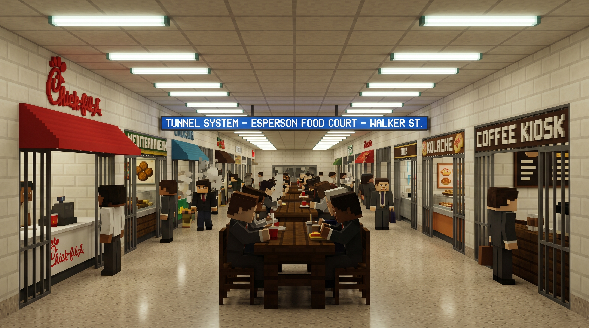
Figure 9.5 · The Esperson food court (808 Travis) — the archetype. A long, narrow corridor with a single row of storefronts on each side. Off-white dropped ceiling with fluorescent tubes, beige terrazzo floor, off-white painted concrete-block walls. A backlit wayfinding band at a midpoint. Chain-restaurant signage: Chick-fil-A red, a coffee kiosk, a kolache shop, a Mediterranean counter. Communal laminate tables. The lunch-rush feel with a few office-worker silhouettes. 15–18 storefronts total, 7–9 on each side. The single food court rendered in full detail.
Pennzoil Place underground (the densest)
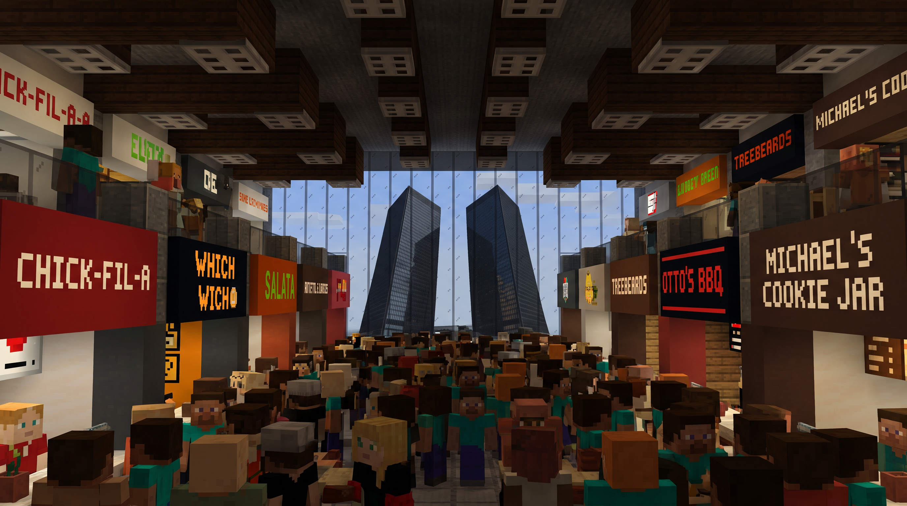
Figure 9.6 · Pennzoil Place underground (711 Louisiana) — the densest. A wider node with 10–12 tightly packed storefronts, minimal aisle space, dark ceiling accents, kitchen-exhaust grilles overhead. The two Philip Johnson mirrored trapezoidal towers visible through the lobby glass at the corridor end. Chick-fil-A red, Which Wich black/orange, Salata red-orange signage. Crowded, packed, the no-clear-aisle feel.
1001 Fannin / Lamar Tunnel (the modern refresh)
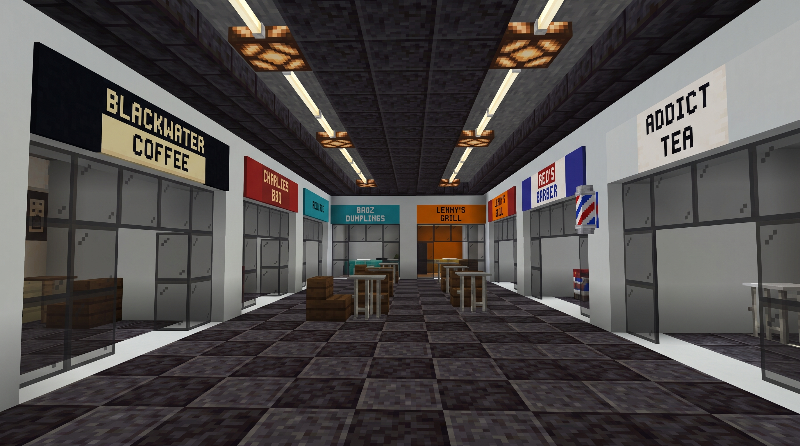
Figure 9.7 · 1001 Fannin / Lamar Tunnel food court — the modern refresh. Dark gray or black dropped ceiling, polished dark-charcoal porcelain floor, frameless glass storefronts, LED panel lights. Blackwater Coffee, Charlies BBQ, Baoz Dumplings, Lenny's, Red's Barbershop. Clean, contemporary, 2020s minimalist. Sharp contrast to the Esperson's 1970s feel. The 2010s LED refresh archetype.
McKinney Place / 930 Main concourse (the public-entry food court)
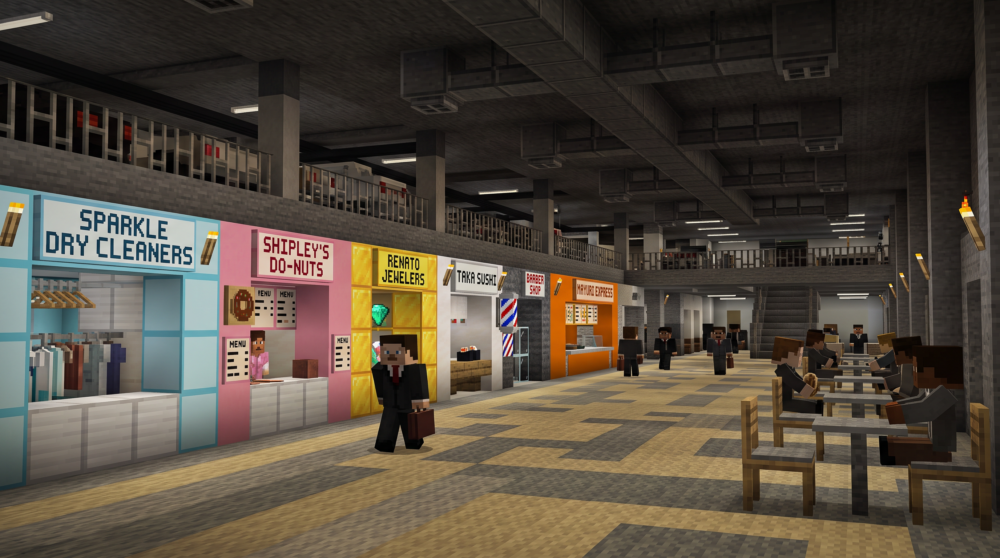
Figure 9.8 · McKinney Place / 930 Main concourse — under a parking garage. Long, linear concourse with mixed retail and services. Open-deck concrete ceiling above, exposed ductwork. Sparkle Dry Cleaners blue, Shipley's Do-nuts pink, a barber pole, Renato Jewelers, Taka Sushi. The parking-garage-food-court feel: more utilitarian, less polished, more services-heavy.
Other tenant zones (the supporting cast)
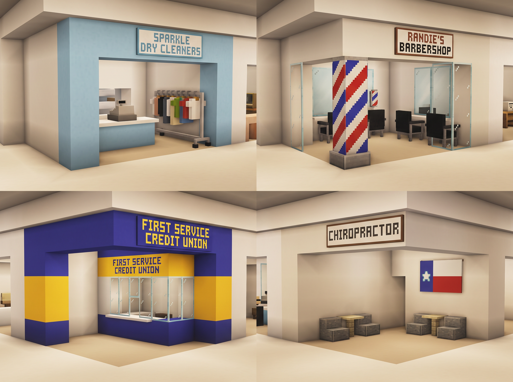
Figure 9.9 · The supporting tenant zones — a 4-panel composition. Top-left: Sparkle Dry Cleaners (blue-and-white, drop-off/pick-up rack). Top-right: Randy's Barbershop (barber pole, small waiting area). Bottom-left: First Service Credit Union / Comerica Bank (small bank branch with glass partition). Bottom-right: generic services bay (chiropractor / dental / printing / newsstand). All in the standard tunnel palette, all in 1970s corridor side bays.
The skybridge (the above-ground companion)
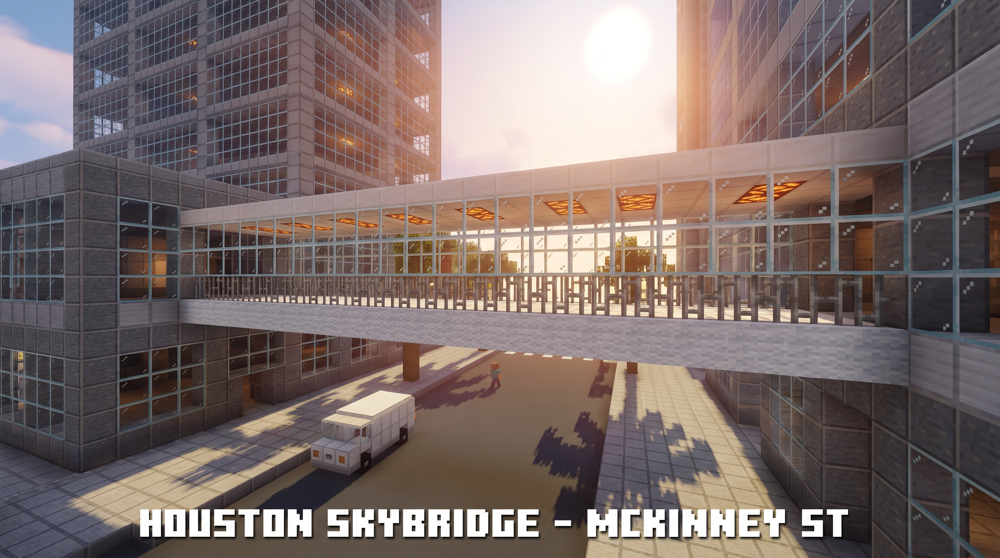
Figure 9.10 · The skybridge — the above-ground companion to the tunnel. A glass-enclosed second-floor walkway spanning McKinney Street, connecting two office towers. Glass curtain walls with brushed-aluminum mullions, white carpet floor, acoustic-tile ceiling, soft LED lighting. The street visible below with a small white van and a single pedestrian. The secondary movement layer that runs parallel to the tunnels.
4 skybridges, one per quadrant:
McKinney Street skybridge — crosses E–W, x = 0 to 23, y = 68. Connects McKinney Garage (S) to generic tower (N).
Travis Street skybridge — crosses N–S, z = 0 to −110, y = 68. Connects 1001 Fannin (E) to JPMorgan Chase (W).
Louisiana Street skybridge — crosses N–S, z = −45 to −65, y = 68. Connects Esperson (E) to Pennzoil (W) — the most famous.
Walker Street skybridge — crosses N–S, z = −45 to −65, y = 68. Connects Esperson (E) to generic tower (W).
The T-marker (the only on-street indication)
Figure 9.11 · The T-marker — close-up. A small blue "T" inside a circle, embedded in the sidewalk at the curb of Louisiana Street, outside Wells Fargo Plaza. Easy to miss, deliberate. With the granite base of the Wells Fargo tower visible in the background. The "you found the entrance" moment. Daylight, hot, a palm tree shadow across the sidewalk.
The wayfinding system (the chronic weak point)
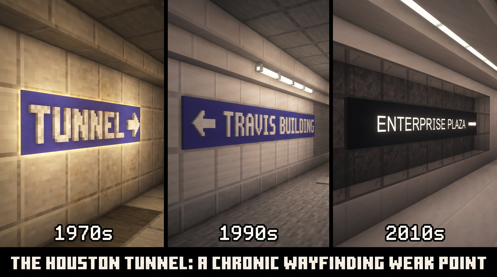
Figure 9.12 · The wayfinding system — 3-panel time-staggered quality. Left: a 1970s blue-band "Tunnel →" backlit sign with white sans-serif text, slightly yellowed. Center: a 1990s cleaner version, white-on-blue band. Right: a 2010s minimal version, white-on-black with a single arrow. The chronic weak point of the real system — the build either replicates or fixes. Mounted on off-white tunnel walls.
The flood control (the engineering easter egg)
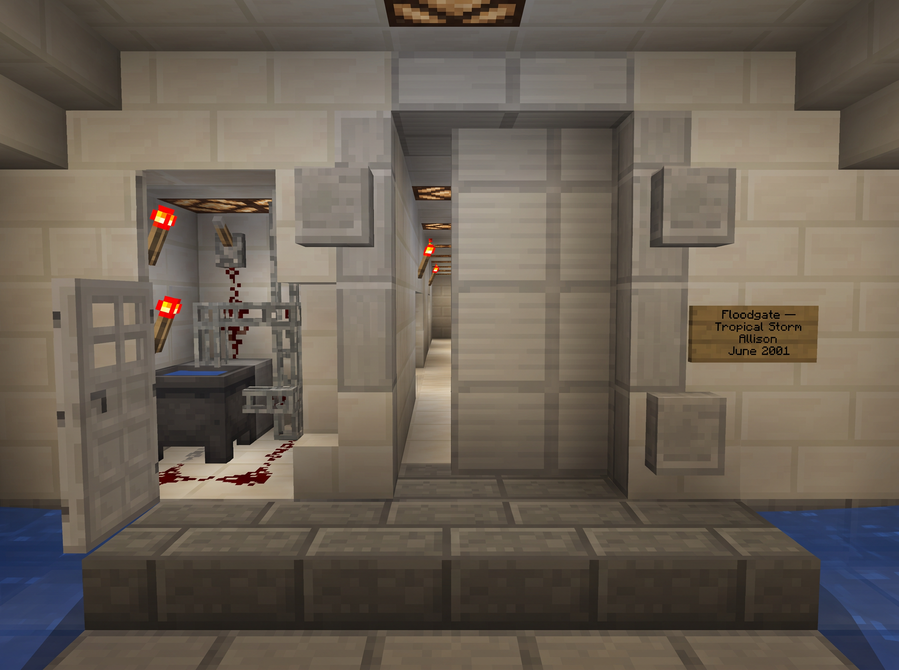
Figure 9.13 · The floodgate — the engineering easter egg. A vertical iron door slotted into iron-block brackets at the tunnel-level entry, with a small bronze plaque reading "Floodgate — Tropical Storm Allison, June 2001." A sump-pump room visible through an open side door, with a cauldron and iron-bars piping. The 6-inch raised stone-brick threshold at the doorway. The engineering detail that distinguishes the Houston tunnel from a generic underground concourse.
The 1930s origin plaque (the founding myth)
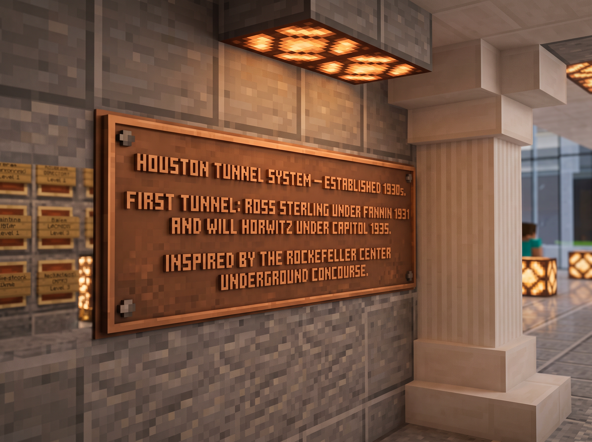
Figure 9.14 · The 1930s dual-origin plaque. A bronze wall plaque in the Wells Fargo lobby: "Houston Tunnel System — Established 1930s. First tunnel: Ross Sterling under Fannin (1931) and Will Horwitz under Capitol (1935). Inspired by the Rockefeller Center underground concourse." Mounted on a polished-andesite lobby wall next to a quartz-pillar column. Soft LED accent lighting from above.
The "200,000 daily users" interpretive panel (the punchline)
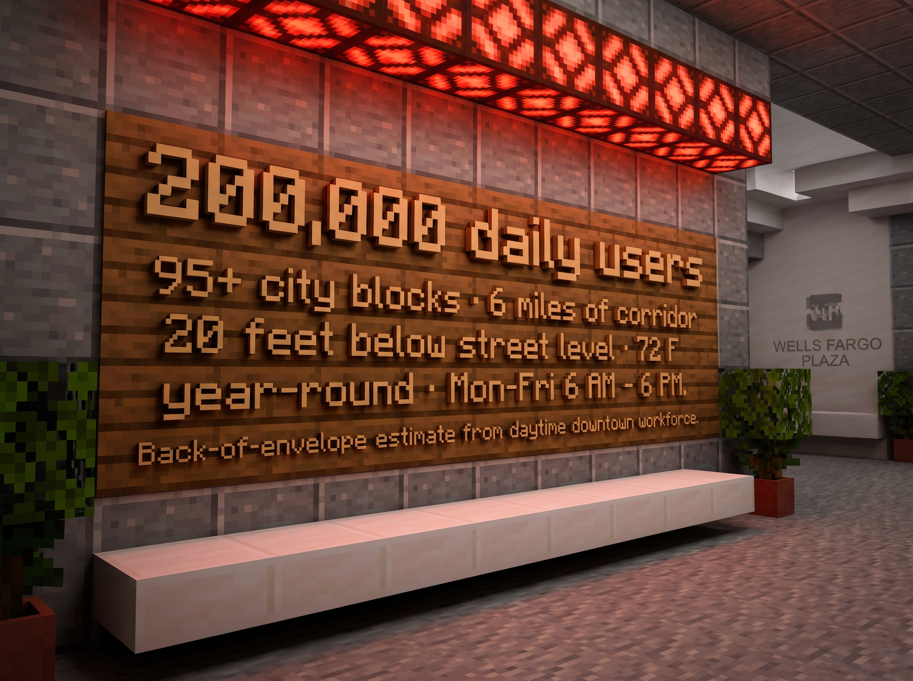
Figure 9.15 · The "200,000 daily users" interpretive panel. A large wall panel in the Wells Fargo lobby. Headline: "200,000 daily users" in bold sans-serif, with subtext: "95+ city blocks · 6 miles of corridor · 20 feet below street level · 72°F year-round · Mon–Fri 6 AM – 6 PM." A small footnote: "Back-of-envelope estimate from daytime downtown workforce (per Discover Houston Tours)." Mounted on a polished-andesite wall above a quartz-slab bench.
The "largest" myth-busting plaque
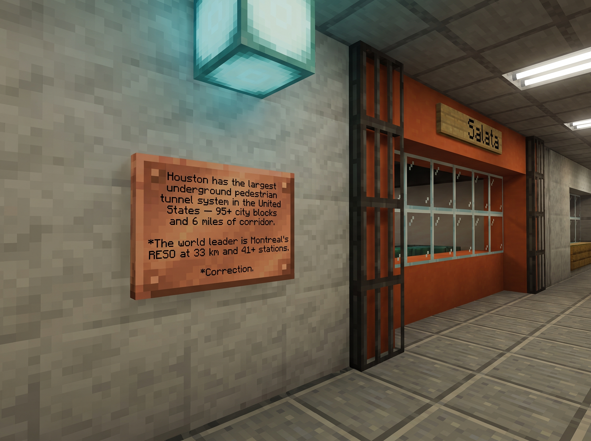
Figure 9.16 · The "largest tunnel system" myth-busting plaque. A small bronze wall plaque in the Pennzoil Place underground: "Houston has the largest underground pedestrian tunnel system in the United States — 95+ city blocks and 6 miles of corridor. The world leader is Montreal's RÉSO (33 km, 41+ stations)." The asterisk-style correction. Mounted on a light-gray-concrete wall next to a Salata storefront.
Atmospheric easter eggs (the texture)
Time-of-day lighting cycle: Redstone clock. The food courts peak at Minecraft-time 0 (morning rush and lunchtime), empty at 6000 (afternoon lull), dim at 12000 (after-hours shutdown), dark at 18000 (night).
After-hours shutdown in the McKinney quadrant: lights off, security-locked elevator bank, "Tunnel Closed 6:00 PM" sign, a few cleaning-crew NPCs.
Water-stained ceiling tiles: 1 in 50 tiles in the 1970s-Hines-era corridors. light_gray_wool patches on the bottom of smooth_stone_slab ceiling panels.
The "1st Shift 06:00 / 2nd Shift 14:00 / 3rd Shift 22:00" sign on one of the building-engineering doors. The back-of-house staff do work in the tunnel after hours.
HVAC hum as ambient sound in the tunnel segments (achieved by enclosed space and a constant note_block far away).
Note-block clatter at food-court kitchen areas for kitchen noise, register beeps, conversation.
Lighting plan (the time-staggered cross-section)
The lighting is the primary visual differentiator between the 4 eras. The build must show the 4 corridor variants side by side, conveying the "time-staggered cross-section" feel that is the system's signature visual identity.
Era
Light blocks
Density
Light level
Mood
1970s Hines (default)
sea_lantern strips in smooth_stone_slab ceiling
Every 4 blocks
10
Even, fluorescent, slightly dim. "Clean but dated."
Build strategy: hybrid (top-down at the block-quadrant level, bottom-up at the per-quadrant level)
The build's defining feature is the transition between the two layers — the lobby descent, the T-marker at the curb, the skybridge landing. If the contractor builds all 4 quadrants of the above-ground first and then excavates the tunnels below, the descent moments get built as a final integration step that is hard to verify.
The hybrid strategy ensures the descent moments (the lobby-to-basement transitions at Wells Fargo, McKinney, and the skybridge landings) are built as a single integration step in Phase 4, with the above-ground lobby and the below-ground tunnel designed together.
The 7 construction phases
Phase
Goal
Block count
Bot time
Dependencies
1. Site prep
Clear 144×96, set the 6-block-tall tunnel air space, mark quadrant boundaries and Cameron 2015 grid labels
~10,000 (mostly excavation)
2–4 hrs
none
2. Above-ground city shell
4 anchor towers + 8–10 generic towers + 2–3 parking garages + street grid + 4 skybridge shells. Lobbies NOT built
~50,000
8–12 hrs
Phase 1
3. Tunnel excavation
Excavate the 4-quadrant tunnel grid. All corridors, food-court nodes, and tenant bays as hollow air space
~18,500 (void)
4–6 hrs
Phase 1 (partial)
4. Tunnel interior
Walls, floors, ceilings, lighting, wayfinding, the lobby-to-basement descents. Time-staggered cross-section established here.
Complete two-layer city with combined-complex integration
~158,000 placed
~43–66 hrs
Tools: schematic-based for the above-ground shell, in-place for the tunnel interior
The above-ground city is repetitive (8–10 generic downtown towers of similar form) and benefits from schematic placement. The tunnel interior is highly customized (the time-staggered cross-section, the food-court layouts, the descent moments) and benefits from in-place block-by-block placement.
2–3 "above-ground" bots — place the 4 anchor towers + the 8–10 generic towers in parallel.
2–3 "tunnel excavation" bots — clear the tunnel void in parallel, one per quadrant.
4 "tunnel interior" bots — place the walls, floors, ceilings, and lighting in parallel, one per quadrant.
1 "wayfinding + finishing" bot — place the wayfinding bands, the easter eggs, the redstone clocks, the NPCs, in sequence.
1 human overseer — verify the build at each phase, fix any issues, and approve the next phase.
Custom tooling (mc-fleet-bot commands)
The following custom commands would speed up the build (implementable as small mc-fleet-bot plugins or WorldEdit wrappers):
/tower wells_fargo x y z height=70 — place a named tower schematic.
/corridor 1970s x1 z1 x2 z2 width=5 — place a standard corridor segment of a given era.
/foodcourt esperson x y z tenants=full — place a food-court archetype with the tenant mix specified.
/wayfinding tunnel_east x y z — place a "Tunnel →" or "To [Building Name] →" sign.
/npc office_worker x y z visible=peak — place an office-worker NPC with time-of-day visibility.
/easter_egg 200000_panel x y z — place a named easter egg from the library of 18+ documented easter eggs.
/time_of_day cycle=0_6000_12000_18000 — set up the redstone clock for the time-of-day lighting cycle.
Risk register (the high-stakes moments)
Risk 1 · Two-layer integration is a render-distance risk
Minecraft has a default render distance of 8–12 chunks (128–192 blocks). The above-ground city (top of JPMorgan at ~80 blocks) and the tunnel (6 blocks below grade) are 86 blocks apart vertically. A player on the surface cannot see the tunnel, and vice versa. The "two-layer city" feel depends on the player understanding that both layers exist.
Mitigation: in-build signage (T-markers, lobby directories, "Tunnel → Basement" signs, skybridge landings). The interpretive panel at the Wells Fargo entry conveys the scale of the underground city without requiring the player to see it directly.
Risk 2 · The time-staggered cross-section is hard to render correctly
The single highest-risk visual element. The contractor must carefully sequence the corridor segments so the 1970s / 1990s / 2010s eras are clearly distinguishable but not jarring — the transition between eras should be a single block, not a 10-block gradient. The 1950s minimal corridor is the smallest segment but the most visually distinctive — the absence of a dropped ceiling is a major visual change.
Mitigation: build the 1970s default first as the reference, then the 1990s and 2010s refreshes as explicit variants, then the 1950s minimal as the most-distinct segment. Verify visually with a corridor walk-through.
Risk 3 · The food-court layouts are the signature work
The Esperson single-loaded layout is the signature look but is hard to get right — the corridor must feel narrow and long, with the storefronts on both sides creating a perspective effect. The Pennzoil Place density is the opposite risk — packed and crowded, with minimal aisle space. The 1001 Fannin modern minimalism is a different risk — frameless glass storefronts and dark ceiling must feel 2020s contemporary.
Mitigation: build the Esperson first (the bar for the other three). Verify each food court's perspective and density visually before moving on.
Quality gates (after each phase, verify before moving on)
Phase 1: terrain level to y=63, tunnel void excavated to y=58, Cameron 2015 grid labels visible, street surface preserved (no breakthrough).
Phase 2: all 4 anchor towers built with documented signatures, 8–10 generic towers with uniform cornice line, McKinney Garage + 2 generic garages built, 4 skybridge shells built, lobbies NOT yet built (Phase 4).
Phase 3: all standard corridor segments excavated, all 4 food-court nodes excavated, ~50 tenant bays excavated, 1 sump-pump room, 2 floodgate shafts, 4 skybridge landings, food-court node excavations connect continuously to corridor excavations (no air gaps).
Phase 5: Esperson has 15–18 storefronts, Pennzoil Place has 10–12, 1001 Fannin has 12–14, McKinney Place has 12–14, 6 supporting tenant zones built, 8–10 "Vacant / For Lease" bays placed, brand-color accuracy verified, communal tables placed, restrooms fitted out.
Phase 6: all 4 skybridge interiors built, all 4 skybridge landings built and aligned with descents, final wayfinding complete, 2 T-markers placed, 4 lobby building directories built. Wayfinding test: starting at the Wells Fargo entry, can a player find their way to every food court using only the in-build signage?
Phase 7: all 18+ easter eggs placed, time-of-day cycle operational, after-hours shutdown operational in McKinney quadrant, 30–40 NPCs placed, cave ambient set, note-block clatter set. Easter egg accessibility test: can a player find all 18+ easter eggs within 30 minutes of focused exploration? Final navigation test: walk the entire build from Wells Fargo → McKinney → 1001 Fannin → Pennzoil → Esperson and back. The journey should take 5–8 minutes.
Chapter 11 · MVP, v0.5, v1.0, v1.5, v2.0
Development Plan · Phased Delivery
The MVP (v0.1) is the soul in miniature
The minimum viable build is the Wells Fargo Plaza street-level entrance + the descent + the first 1–2 blocks of standard tunnel. It is the smallest possible build that captures the soul of the Houston tunnel system: the almost-secret entrance paradox, the lobby descent, the climate-controlled underground corridor.
v0.1 · "The Wells Fargo Entrance" — 10 load-bearing must-haves
The 10 elements that make the build unmistakably a Houston tunnel replica at ~3,000 blocks:
The Wells Fargo Plaza tower shell (lobby only, no upper floors)
The Wells Fargo lobby interior (granite-and-glass, 1980s)
If I see the Wells Fargo lobby and the descent and the first 1–2 blocks of tunnel, I know this is a Houston tunnel replica. The rest is detail.
The 5 versions, each playable and recognizable on its own
Version
Theme
Block count (cumulative)
Bot hrs (cumulative)
Human hrs (cumulative)
v0.1
"The Wells Fargo Entrance"
~3,000
2–3
4–6
v0.5
"The Food Court"
~25,000
10–15
25–35
v1.0
"The Tunnel" — load-bearing
~120,000
35–50
90–125
v1.5
"The City"
~155,000
55–80
150–200
v2.0
"The Two-Layer City" — full polish
~158,000
60–90
160–220
v0.5 ("The Food Court"). Adds the Esperson food court (the signature, 15–18 storefronts, 13 named tenants + 2 vacant bays, the Sandra Lord plaque), the 1001 Fannin modern refresh, the first 30–50 blocks of standard corridor between Wells Fargo and the food courts, 6 supporting tenant zones, the first wayfinding band, the McKinney Garage direct entry, the McKinney Place food court, and 4–6 NPC office workers. The player can now walk the daily commute: Wells Fargo → corridor → Esperson food court → 1001 Fannin → McKinney → back. ~5 minutes of play.
v1.0 ("The Tunnel" — load-bearing). Adds the full 6×4 sample footprint of the tunnel (all 24 compressed blocks), the third and fourth food courts (Pennzoil Place underground, the Lamar Tunnel food court), the full time-staggered cross-section (1970s / 1990s / 2010s / 1950s minimal in their respective quadrants), the full 6 supporting tenant zones, the complete wayfinding system (~30 wayfinding bands, 4 food-court backlit signage bands, 2 T-markers, 4 lobby building directories), the Pennzoil Place lobby bridge, the JPMorgan Chase Tower lobby, the Esperson lobby, the Pennzoil lobby, the Hines marker, the "Vacant / For Lease" bays, the water-stained ceiling tiles, and ~30 NPCs distributed across the food courts and corridors. The build is now a complete Houston tunnel system replica at the sample scale. ~5–8 minutes of play to walk the entire sample.
v1.5 ("The City"). Adds the full above-ground city: the 4 anchor towers at full height (Wells Fargo at 70 blocks, JPMorgan Chase at 80, Pennzoil at 50, Esperson at 30–40), the 8–10 generic downtown towers (heights 25–60), the 2–3 parking garages, the full skywalk network (4 skybridges with full interiors, 4 skybridge landings), the street-level details (fire hydrants, parking meters, trash cans, palm trees, the Wells Fargo granite plaza), the buffer blocks, and the Combined Complex Transit Hub plaza. The build is now the complete two-layer city. ~2–3 minutes from Wells Fargo to the farthest food court, with the city's skyline visible from any one vantage point.
v2.0 ("The Two-Layer City" — full polish). Adds the full combined-complex integration (the SubTropolis public shaft landing plaza, the Cheyenne Mountain service tunnel terminus), the Theater District performance-night stub corridor, the after-hours shutdown in the McKinney quadrant, the time-of-day lighting cycle across the entire build, the remaining easter eggs (72°F climate sign, Harris County edge sign, St. Joseph edge sign, "1st Shift / 2nd Shift / 3rd Shift" sign), the sound design (cave ambient, note-block clatter), and the final lighting tuning. The build is now a complete, polished, playable Houston tunnel system replica at the 6×4 sample scale.
Future extensions (after v2.0)
More food court clusters (v2.5): the 5th named food court (W. Walker Tunnel at 1000 Main St, BG Group Place) with 6–8 storefronts and the 5 named tenants.
More city blocks (v3.0 / v3.5): extend to 8×6 (48 blocks) or 10×8 (80 blocks) sample. Additional blocks are generic downtown towers, supporting tenant zones, and additional skybridges.
Working wayfinding system (v2.5): per-block signage, per-intersection signage with all 4 directions named, the "Tunnel" backlit wayfinding band upgraded to include the building name + address, a printed-map standee with the full 95+ block map.
1930s Sterling + Horwitz tunnels as a museum / archaeology layer (v3.0): the 1931 Sterling tunnel and the 1935 Horwitz tunnel rendered in their full historical form — a separate, optional addition that the player can choose to visit.
"Tour mode" with NPCs (v3.0): Sandra Lord "the Tunnel Lady" NPC who spawns at the Wells Fargo entry and follows a scripted tour route through the build.
Full combined-complex integration (v3.0): the SubTropolis public shaft as a 5×5 block elevator / stair shaft, the Cheyenne Mountain service tunnel as a 6×5 block horizontal tunnel, the combined-complex map at the Combined Complex Transit Hub plaza.
Chapter 12 · All 20 Masterplan Renderings
Visualizations
All 20 masterplan renderings — concept visualizations of the Minecraft build as designed, with Minecraft's blocky voxel geometry rendered to look cinematic. The documented palette (white/cream/beige tunnel base, fluorescent cool white, tenant brand colors, wayfinding blue) is applied consistently. Each rendering includes its filename, prompt summary, intended use in this master plan, and the rendering itself.
01 · Above-ground city overview. Wide exterior shot of the Houston above-ground city — the 6×6 block grid, 4 named anchor towers (Wells Fargo Plaza, JPMorgan Chase Tower, Pennzoil Place, Esperson), generic downtown towers, parking garages, skybridges crossing streets, surface streets, palm trees, hot sunny climate. The city is the primary layer. (16:9, 2K) Used on the cover (Section 1) and as the master plan's opening spread.02 · Wells Fargo Plaza street entrance. Street-level exterior view of the Wells Fargo Plaza entrance (1000 Louisiana). 1980s granite-and-glass office-tower lobby, with the small T-marker plaque on the sidewalk. The almost-secret feel. One of only 2 direct street-level entries in the 95-block system. (4:3, 2K)03 · McKinney Garage direct access. Street-level exterior of the McKinney Garage direct access (930 Main). Open-deck parking garage facade, ground-floor retail concourse, T-marker plaque at curb, "Tunnel Level" sign visible. Different feel from Wells Fargo — reads as "parking garage with shops" rather than office-tower lobby. (4:3, 2K)04 · Lobby-to-tunnel descent. Interior descent view. Looking down an interior stairwell or escalator shaft from a polished 1980s office-tower lobby (marble/granite, building directory, elevator bank) into the basement tunnel corridor below. The transition from natural light to fluorescent. The visual shock of going from marble to beige. The "shadow city" reveal. (4:3, 2K)05 · The typical tunnel corridor (the money shot). A standard 1970s-Hines-era tunnel corridor. Painted concrete-block walls in off-white, acoustic-tile dropped ceiling in a 2×4 grid, fluorescent-troffer lighting strips, beige VCT or terrazzo floor, 10–20 ft wide, 8–9 ft ceiling. A single "Tunnel →" backlit blue band sign visible at a far intersection. The signature image of the system. (16:9, 2K) The hero shot of the entire master plan.06 · Esperson food court — the archetype. The Esperson food court (808 Travis). A long, narrow corridor with a single row of storefronts on each side. Off-white dropped ceiling with fluorescent tubes, beige terrazzo floor, off-white painted concrete-block walls. A backlit wayfinding band at a midpoint. Chain-restaurant signage: Chick-fil-A red, a coffee kiosk, a kolache shop, a Mediterranean counter. Communal laminate tables. The lunch-rush feel with a few office-worker silhouettes. (16:9, 2K) The signature food court, the largest in the master plan.07 · Pennzoil Place underground — the densest. A wider node with 10–12 tightly packed storefronts, minimal aisle space, dark ceiling accents, kitchen-exhaust grilles overhead. The two Philip Johnson mirrored trapezoidal towers visible through the lobby glass at the corridor end. Chick-fil-A red, Which Wich black/orange, Salata red-orange signage. Crowded, packed, the no-clear-aisle feel. (16:9, 2K)08 · 1001 Fannin / Lamar Tunnel — the modern refresh. Dark gray or black dropped ceiling, polished dark-charcoal porcelain floor, frameless glass storefronts, LED panel lights. Blackwater Coffee, Charlies BBQ, Baoz Dumplings, Lenny's, Red's Barbershop. Clean, contemporary, 2020s minimalist. Sharp contrast to the Esperson's 1970s feel. (16:9, 2K)09 · McKinney Place / 930 Main concourse — the public-entry food court. Long, linear concourse with mixed retail and services. Open-deck concrete ceiling above, exposed ductwork. Sparkle Dry Cleaners blue, Shipley's Do-nuts pink, a barber pole, Renato Jewelers, Taka Sushi. The parking-garage-food-court feel: more utilitarian, less polished, more services. (16:9, 2K)10 · Other tenant zones — 4-panel composition. The supporting tenant zones that aren't food courts. Top-left: Sparkle Dry Cleaners. Top-right: Randy's Barbershop. Bottom-left: First Service Credit Union / Comerica Bank. Bottom-right: a generic services bay (chiropractor / dental / printing / newsstand). All in the standard tunnel palette, all in 1970s corridor side bays. (4:3, 2K)11 · Skybridge — the above-ground companion to the tunnel. An above-ground glass skybridge crossing McKinney Street at the second floor, connecting two office towers. Glass curtain walls with brushed-aluminum mullions, white carpet floor, acoustic-tile ceiling, soft LED lighting. The street visible below with a small white van and a single pedestrian. (16:9, 2K)12 · T-marker surface entrance. Close-up of the small brass "T-marker" surface entrance plaque set into a stone-brick sidewalk at the curb of Louisiana Street, outside Wells Fargo Plaza. A small blue "T" inside a circle, easy to miss. The granite base of the Wells Fargo tower visible in the background. Daylight, hot, a palm tree shadow across the sidewalk. The "you found the entrance" moment. (1:1, 2K)13 · Wayfinding system — 3-panel time-staggered. Left: a 1970s blue-band "Tunnel →" backlit sign with white sans-serif text, slightly yellowed. Center: a 1990s cleaner version, white-on-blue band. Right: a 2010s minimal version, white-on-black with a single arrow. The chronic weak point of the real system — the build either replicates or fixes. (16:9, 2K)14 · Flood control — the engineering easter egg. The Wells Fargo floodgate. A vertical iron door slotted into iron-block brackets at the tunnel-level entry, with a small bronze plaque reading "Floodgate — Tropical Storm Allison, June 2001." A sump-pump room visible through an open side door, with a cauldron and iron-bars piping. The 6-inch raised stone-brick threshold. (4:3, 2K)15 · 1930s origin plaque — the dual-origin story. A bronze wall plaque in the Wells Fargo lobby: "Houston Tunnel System — Established 1930s. First tunnel: Ross Sterling under Fannin (1931) and Will Horwitz under Capitol (1935). Inspired by the Rockefeller Center underground concourse." Mounted on a polished-andesite lobby wall next to a quartz-pillar column. Soft LED accent lighting. (4:3, 2K)16 · "200,000 daily users" interpretive panel — the punchline. A large wall panel in the Wells Fargo lobby. Headline: "200,000 daily users" in bold sans-serif, with subtext: "95+ city blocks · 6 miles of corridor · 20 feet below street level · 72°F year-round · Mon–Fri 6 AM – 6 PM." A small footnote: "Back-of-envelope estimate from daytime downtown workforce (per Discover Houston Tours)." (4:3, 2K)17 · "Largest" myth-busting plaque. A small bronze wall plaque in the Pennzoil Place underground: "Houston has the largest underground pedestrian tunnel system in the United States — 95+ city blocks and 6 miles of corridor. The world leader is Montreal's RÉSO (33 km, 41+ stations)." The asterisk-style correction. (4:3, 2K)
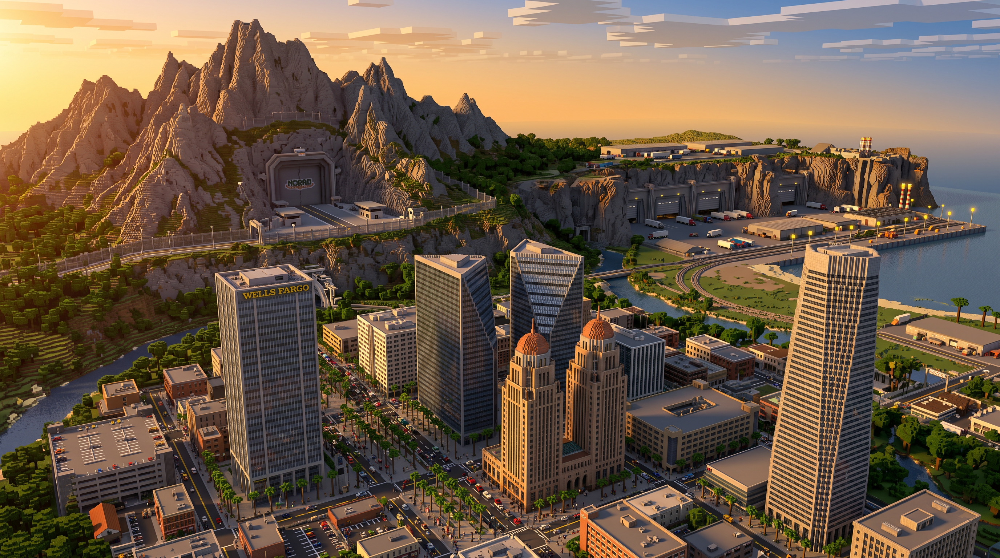
18 · Combined complex overview — the BIG picture. A panoramic view showing the combined-complex layout: in the foreground, the Houston above-ground city with its skyscrapers in a valley; behind it on the north side, a mountain range with Cheyenne Mountain Complex nestled into the rock; on the south side across a flatter coastal plain, the SubTropolis industrial complex. Sky with the warm light of late afternoon. The third identity in context. (16:9, 2K)
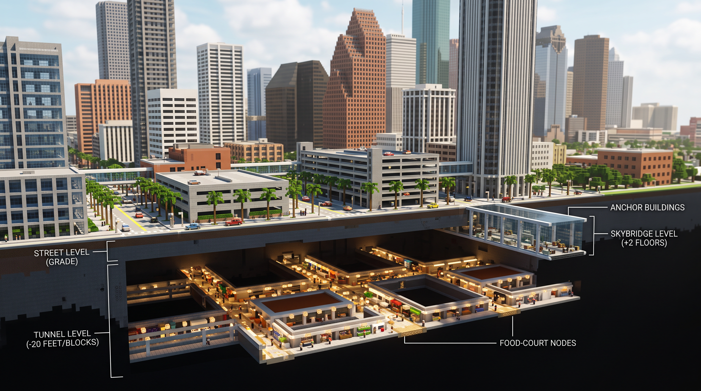
19 · Cutaway diagram — the "shadow city" made literal. A 3/4 cutaway view of the entire Houston build: above-ground city (skyscrapers, parking garages, skybridges, streets) sitting on top; the tunnel system (corridors, food courts, wayfinding bands, floodgate) below at y = 20 ft depth. A vertical cross-section showing the relationship between street, skybridge level (y = 68), and tunnel level (y = 58). The two-layer city concept made literal. (16:9, 2K)
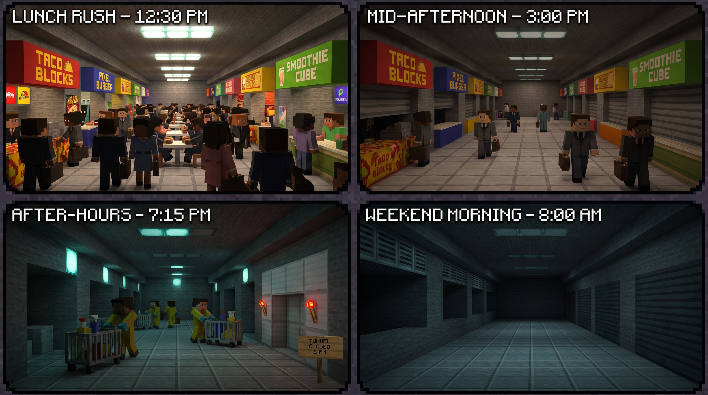
20 · Day-night cycle — 4-panel composition. The tunnel at different times of day. Top-left: Lunch rush (11 AM–1 PM) — fluorescent-lit, packed with office workers, vibrant, brand colors pop. Top-right: Mid-afternoon (3 PM) — dimmer, half-empty, fluorescent, calm. Bottom-left: After-hours (7 PM) — lights off, cleaning-crew silhouettes with carts, a security-locked elevator bank, "Tunnel Closed 6 PM" sign. Bottom-right: Weekend morning — dark, climate-controlled, unstaffed, the same corridor space feeling completely different. (16:9, 2K)
Optional / stretch renderings (4 additional)
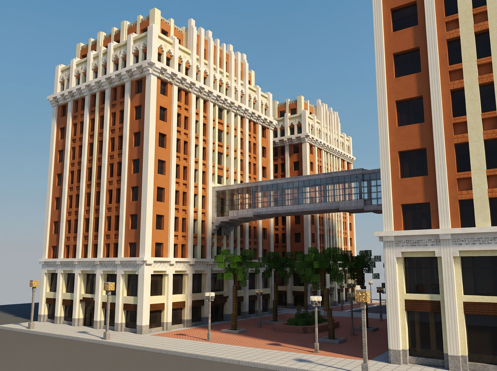
21 · Art Deco Esperson tower (optional). The Niels Esperson Art Deco twin towers above the food court. Cream-and-terracotta limestone facade, stepped parapets, vertical quartz pilasters, art-deco cornice, a small plaza at the base. A 1930s silhouette against a Houston sky. The above-ground flavor of the archetype food-court building. (4:3, 2K)
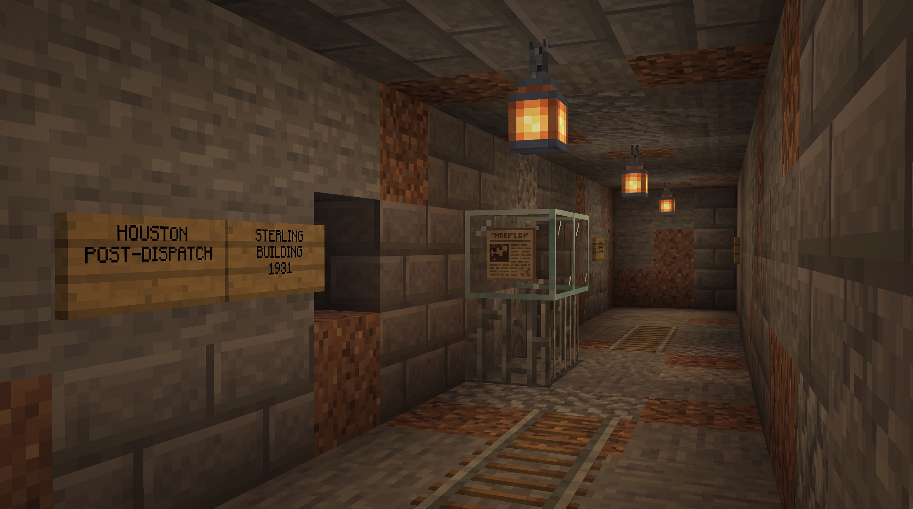
22 · Sterling tunnel archaeology (optional, v3.0). A short 1930s tunnel segment rendered as archaeology / museum layer. Raw concrete walls (unpainted), exposed brick, a single incandescent bulb every 8 blocks, a faded "Houston Post-Dispatch" sign on the wall, an old brass "Sterling Building 1931" plaque. A small glass case with a 1930s newspaper reproduction. The museum / faded reference for the optional archaeology extension. (16:9, 2K)
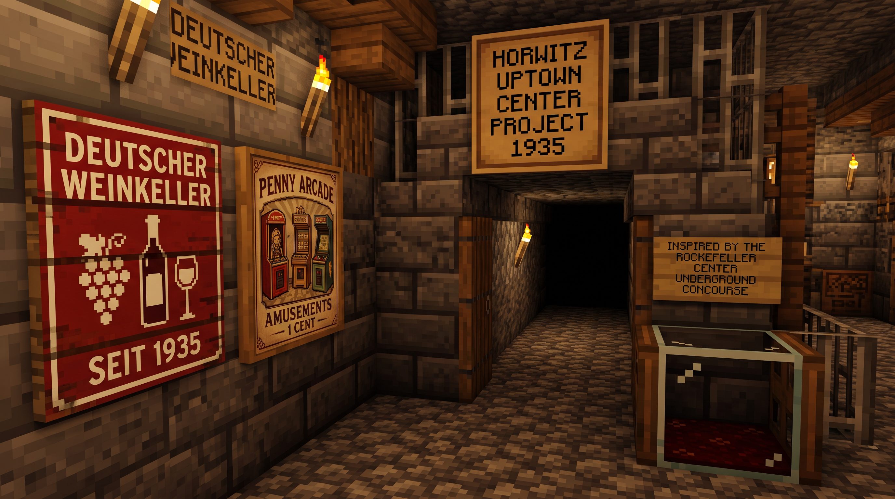
23 · Horwitz theater archaeology (optional, v3.0). The Will Horwitz 1935 theater archaeology / museum layer. A stub tunnel with a "Horwitz Uptown Center Project 1935" plaque, a painted German wine tavern sign (reproduction), a penny-arcade reference, the "Inspired by the Rockefeller Center underground concourse" inscription. A small section of dark red theater carpet visible under glass. (16:9, 2K)
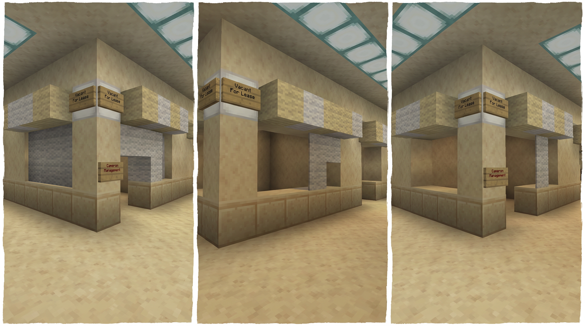
24 · Vacant / For Lease bays (optional). A 3-panel composition of "Vacant / For Lease" buffer bays in the corners of the food courts. Beige awnings, white-concrete "For Lease" signs, empty shopfronts with papered-over windows, a small "Cameron Management" leasing contact placard. The system of empty bays that the real Houston tunnels have, the churn of tenant turnover, the deliberately under-rendered feel. (16:9, 2K)
Chapter 13 · READ THIS TO BUILD
AI Contractor Brief
⚠ Critical · The "never forget the AI plans" requirement
This is the machine-actionable counterpart to the human-facing master plan. Every block, every coordinate, every phase is specified here so that an LLM agent (or a human) can place blocks without further interpretation. Where this brief conflicts with upstream design notes, this brief wins for build execution; upstream docs win for design intent. The full source is at 06-contractor/contractor-brief.md.
§1 · Project Header
Field
Value
Build ID
03-houston-tunnel-system
Build name
Houston Tunnel System (civilian climate-controlled underground pedestrian network)
Build target
mc-fleet-bot Minecraft sidecar with WorldEdit-style schematic placement
Single contiguous rectangular plot; world origin at Wells Fargo Plaza street entrance
Master plan tag legend
[D] documented · [I] inferred from archetype · [X] invented/designer-filled
Combined-complex fiction
SubTropolis public shaft and Cheyenne Mountain service tunnel are project fictions; not connected to Houston tunnels
Quick reference — world setup: World seed: any flat superflat world, or a minecraft:custom flat preset with bedrock at y=0 and 64 layers of stone above. Pre-clear the build area: a 144 × 96 block rectangle from (0, 0, 0) to (144, 96, -138). Set the time-of-day clock to start at Minecraft-time 0 (6:00 a.m. in vanilla). Set gamemode to creative for the build session; no hostile mobs. Working in chunks of 16 blocks is recommended; the build's 144 × 96 footprint is 9 × 6 = 54 chunks.
§2 · Build Targets
§2.1 · Block budget by phase
Total placed-block budget (excludes excavated void) is ~158,000 blocks at full v2.0 polish.
The minimum viable build is the Wells Fargo Plaza street-level entrance + the descent + the first 1–2 blocks of standard tunnel, capturing the entire soul of the Houston tunnel system in ~3,000 blocks. This is the recommended starting point for any contractor.
v0.1 included (load-bearing must-haves): Wells Fargo Plaza tower shell (lobby only) · Wells Fargo lobby interior (granite-and-glass, 1980s) · Bank of 4 elevators + interior stair down · Floodgate at lobby-to-basement transition · First 1–2 blocks of standard 1970s tunnel · Interpretive panel "200,000 daily users" · 1930s origin plaque · Wells Fargo Direct Street Access sign · T-marker at the curb · "Tunnel" capitalization on all signs.
§2.3 · Quality acceptance criteria
The build is accepted when all of the following are true:
The 4 food courts are visually distinct (Esperson single-loaded, Pennzoil packed, 1001 Fannin modern, McKinney linear) and the player can identify each from the in-build signage alone.
The time-staggered cross-section is visible: walking from one quadrant to another, the player sees the era change (1970s → 1990s → 2010s LED → 1950s minimal).
The Wells Fargo descent is the iconic opening: revolving door → marble lobby → elevator bank → interior stair → floodgate → tunnel corridor. The temperature-change feeling is conveyed.
The McKinney Garage descent is the other direct entry, deliberately less polished.
Both T-markers (Wells Fargo, McKinney) are present on the sidewalks.
The 1930s dual-origin plaque is at the Wells Fargo lobby.
The 200,000 daily users / 95+ blocks / 6 mi / 1930s interpretive panel is at the Wells Fargo lobby.
At least 18 easter eggs are placed per design plan §15.
The 4 skybridges span named streets at the second-floor level.
The "Tunnel" capitalization appears on every sign.
No subway/transit or mall contamination (no "MTA," "Platform," central atrium, fountain, etc.).
All 6 named segments (Cameron 2015 grid: A-15 through D-28) are represented.
No surface-street breakthrough — the tunnel excavation did not break the underside-of-street layer (y=63).
The after-hours shutdown dims the McKinney quadrant at Minecraft-time 12000.
A wayfinding test passes: starting at any food court, a player can find every other food court using only the in-build signage.
§3 · Coordinate System
§3.1 · World origin
World origin:(0, 64, 0)
Description: Wells Fargo Plaza street entrance, at the SE corner of the build, on the south face of the Wells Fargo tower, on the sidewalk of Louisiana Street, at street level. T-marker plaque is at this coordinate.
§3.2 · Compass orientation
North (-z)
↑
|
West (-x) ←----+----→ East (+x)
|
↓
South (+z)
Up = +y
Down = -y (depth)
North = -z (Houston CBD runs N–S along Main/Fannin/Travis/Louisiana/Walker/Capitol)
East = +x (E–W cross streets: Lamar, Dallas, McKinney, Rusk)
Up = +y (vertical) · Down = -y (depth)
§3.3 · Y-level reference
Y-level
What
Notes
88
Top of Wells Fargo, JPMorgan Chase, 1001 Fannin
Tower tops
84
Top of Pennzoil Place
80
Top of Esperson, generic tower cornice max
76
Top of McKinney Garage
68
Skybridge level (second floor)
Glass-enclosed walkways
64
Street level
World origin (0,64,0)
63
Underside of street (mechanical space)
1 block; tunnel ceiling structural
62
Tunnel ceiling (food-court node, 4-blk interior)
Open, exposes underside of street
61
Tunnel ceiling (corridor, dropped acoustic)
1-block smooth_stone_slab
58
Tunnel floor
World vertical center of tunnel
-86
Cheyenne Mountain service tunnel floor
Project fiction, far below
§3.4 · Build extent
Above-ground city (6 × 6 = 36 compressed blocks): x = 0 to 138, z = 0 to -138
Tunnel sample (4 × 6 = 24 compressed blocks): x = 0 to 92, z = 0 to -138
Compressed block size: 20 m × 20 m
Block unit (block + 3 m street): 23 m
Total footprint (above-ground): 138 m × 138 m ≈ 19,000 m²
Clear the build area, create the terrain, mark the 6×4 sample footprint, mark the 12 buffer blocks, set the 6-block air space below grade for the tunnel excavation.
4.2.1 Terrain clear & level: Clear the 144 × 96 block rectangle from (0, 0, 0) to (144, 96, -138). Replace all non-air blocks with stone for the layers y=1 to y=63. Set the top of the terrain at y=63 (the underside-of-street layer); streets themselves will be placed in Phase 2 at y=64. Set biome to minecraft:plains or minecraft:savanna via NBT edit.
4.2.2 Quadrant boundary markers: Use light_gray_wool (1 block) at y=80 at the corner of each compressed block, removed after the build is complete.
4.2.3 Street marker strips: Place 1-block-wide gray_concrete strips at y=63 following the N–S and E–W centerlines. Become the actual street surfaces in Phase 2.
4.2.4 Tunnel void excavation: Excavate the tunnel sample footprint (x = 0 to 92, z = 0 to -138, y = 0 to 57) to air. Critical: preserve y=58 to y=63 (tunnel air space + structural shell + underside of street). Critical: preserve the street surface at y=64 — the tunnel excavation must NOT break through the street.
4.2.5 Cameron 2015 grid markers: Place oak_sign markers at the corner of each compressed block, 4 blocks above street grade (y=68), with the Cameron label (e.g., "A-15", "B-16", "C-21"). The 24 tunnel-sample build-block labels: A-15, A-17, A-19, A-21, A-23, A-25, B-16, B-18, B-20, B-22, B-24, B-26, C-17, C-19, C-21, C-23, C-25, C-27, D-18, D-20, D-22, D-24, D-26, D-28.
§4.3 · WorldEdit command reference
//pos1 0,63,0
//pos2 144,0,-138
//set stone
//mask !y=58-64 ← preserve tunnel airspace and street surface
//expand 1 down ← optional
//pos1 0,57,0
//pos2 92,0,-138
//set air
//mask !y=58-64
1001 Fannin (One Fannin) — Block B-16:(33, 64, -10), top at y=88, 20×20 footprint, white_concrete + light_gray_stained_glass_pane. ~4,000 blocks.
McKinney Garage on Main (930 Main) — Block A-21:(10, 64, -82.5), top at y=76, 20×20 footprint. Open-deck gray_concrete parking garage, 4–6 stories, yellow_concrete lane lines, iron_bars railings. Ground floor: light_blue_concrete retail concourse. ~2,500 blocks.
§5.4 · Generic downtown towers (8–10, designer fills in [X])
Position: 8–10 towers on the buffer blocks, generally on the west 2 columns (cols 5–6, x=92 to 138) and the buffer areas. Shell: white_concrete (1990s–2020s) or light_gray_concrete (1980s). Curtain wall: light_gray_stained_glass_pane in 3×5 grid. Height range: 25–60 blocks. Ground floor: gray_concrete parking-garage plinth. Roof: flat gray_concrete with iron_block mechanical penthouses. Cornice: 1-block-wide quartz_block band at the roofline. ~12,000–18,000 blocks.
§5.5 · Street grid
6 N–S streets × ~144 blocks long × 5 blocks wide = ~4,320 gray_concrete. 4 E–W cross streets × ~96 blocks long × 5 blocks wide = ~1,920 gray_concrete. Sidewalks: 1-block-wide smooth_stone_slab on each side. Curb: stone_brick_stairs. Lane lines: yellow_concrete + white_concrete. Total: ~8,700 blocks.
§5.6 · Skybridge shells (4 skybridges)
Each skybridge: 1-block-wide × 2-block-tall glass-enclosed corridor at y=68 spanning a named street. Walls: glass_pane on both long sides + iron_bars mullions every 4 blocks. Frame: iron_bars. Interiors NOT built in Phase 2 — built in Phase 6. ~400 blocks.
§6 · Phase 3 — Tunnel Excavation
Excavate the full 4-quadrant tunnel grid. By the end of this phase, every tunnel corridor, food-court node, and tenant bay is hollow air space ready for interior fit-out in Phase 4.
Place the walls, ceilings, floors, lighting, and wayfinding in every tunnel segment. This phase establishes the time-staggered cross-section (1970s / 1990s / 2010s / 1950s) and builds the lobby-to-basement descent.
§7.2.1 · 1970s Hines-era default corridor (most of the build)
Food-court backlit signage band (larger): 6 wide × 2 tall, 3 rows of redstone_lamp backlight. Sign text: "Esperson / 808 Travis" · "Pennzoil Place / 711 Louisiana" · "1001 Fannin / One Fannin" · "McKinney Place / 930 Main".
Total wayfinding bands: ~30 in the build, distributed at every major corridor intersection. Add the 4 food-court backlit signage bands at food-court entries.
§7.5 · Restrooms
4 restrooms: 1 in each food court + 1 in Wells Fargo lobby. 3×3×3. Walls: quartz_block. Floor: red_terracotta. Ceiling: quartz_slab. Lighting: redstone_lamp every 3 blocks. Fixtures (in Phase 5): toilet partitions, sinks, mirrors. ~400 blocks.
§8 · Phase 5 — Tenant Zones (the highest-fidelity phase)
Final wayfinding sign system: food-court backlit signage bands (6×2) at each food-court entry + additional wayfinding bands at secondary corridor intersections. ~30 wayfinding bands total. ~600 blocks.
T-markers (2):oak_fence post + oak_sign "T" + blue_concrete circle + white_concrete letter. ~20 blocks.
Building directory item_frame arrays (4): 2×3 arrays, with oak_sign labels. ~150 blocks.
Phase 6 total: ~2,000 blocks.
§10 · Phase 7 — Finishing
Add the 18+ easter eggs, the final interpretive plaques, the lighting tuning, the time-of-day cycle, the after-hours shutdown, the cleaning-crew NPCs, the climate-control sound, and the verification pass.
Theater District stub corridor: short 10–15 block stub at end of Lamar–McKinney corridor. 3×3×10. Dim lighting (1 redstone_lamp every 8 blocks), iron_door terminus with "Tunnel Closed · Reopens 6:00 AM Mon" sign. ~300 blocks.
§12 · Schematic References (the schematic library)
The repository has ~110 .schem files (mostly generic structures, decorations, and small builds from the sam-demo collection). No existing schematic is directly reusable for Houston-specific structures. The Houston build's defining elements (food courts, skybridges, lobby descents, time-staggered corridors) are all custom and need to be built in-place or as new schematics.
Potentially reusable (low-priority, with significant modification):kitchen.schem (generic kitchen interior), lantern.schem (decorative lighting), shelf.schem (tenant interior shelving), underground-base.schem (generic underground structure — reference for tunnel-excavation workflow only), modern-apartment.schem / contemporary-house.schem (reference for the 1001 Fannin modern refresh aesthetic), mushroom-cottage.schem (reference for skybridge landing scale).
§12.2 · Custom schematics to create
The following custom .schem files should be authored and saved to D:\projects\mc-fleet-bot\schematics\houston\ for reuse across the build:
Schematic
Description
Size
houston-corridor-1970s-3x3x10.schem
Standard 1970s Hines-era corridor, 3 wide × 3 tall × 10 long
~800 blocks
houston-corridor-1970s-3x3x30.schem
Standard 1970s corridor, longer
~2,400 blocks
houston-corridor-1990s-3x3x10.schem
1990s refresh corridor
~800 blocks
houston-corridor-2010s-led-3x3x10.schem
2010s LED refresh corridor
~800 blocks
houston-corridor-1950s-minimal-3x6x10.schem
1950s bare concrete (no drop ceiling)
~600 blocks
houston-foodcourt-esperson-4x4x20.schem
Esperson food court shell (no tenant fit-out)
~3,000 blocks
houston-foodcourt-pennzoil-6x4x25.schem
Pennzoil Place underground shell
~3,500 blocks
houston-foodcourt-1001fannin-4x4x20.schem
1001 Fannin modern food court shell
~2,500 blocks
houston-foodcourt-mckinney-4x4x25.schem
McKinney Place concourse shell
~3,000 blocks
houston-tenant-bay-2x2x3.schem
Standard tenant bay interior (counter + menu)
~150 blocks
houston-t-marker-1x1x4.schem
T-marker sidewalk plaque
~10 blocks
houston-floodgate-4x4x6.schem
Wells Fargo floodgate assembly
~100 blocks
houston-lobby-descent-wells-fargo-4x6x4.schem
Wells Fargo lobby-to-basement descent
~600 blocks
houston-skybridge-mckinney-1x2x6.schem
McKinney Street skybridge
~100 blocks
houston-skybridge-louisiana-1x2x7.schem
Louisiana Street skybridge (longest, most famous)
~120 blocks
houston-wayfinding-band-4x1.schem
Standard "Tunnel →" wayfinding band
~15 blocks
houston-restroom-3x3x3.schem
Standard restroom
~150 blocks
houston-sump-pump-room-4x4x3.schem
Sump-pump room interior
~200 blocks
Schematic creation workflow: (1) Build a representative instance of the structure in a flat creative world. (2) Use WorldEdit //copy and //schematic save to export. (3) Save to D:\projects\mc-fleet-bot\schematics\houston\. (4) Use //schematic load + //paste to place instances in the build.
After each phase, the contractor (or the human overseer) must verify the build against the design plan before moving on. The quality checkpoints are gates: if a checkpoint fails, the next phase is delayed until the issue is fixed.
§14.1 · Phase 1 checkpoint: site prep
Terrain level to y=63 across the entire 144 × 96 footprint
The 6×4 sample footprint marked with invisible markers
The 4 quadrant boundaries marked
The 6 N–S streets and 4 E–W cross streets visible as gray_concrete strips
The tunnel void excavated to y=58 across the entire 24-block sample footprint
The Cameron 2015 build-block identifier labels (A-15 through D-28) visible at the corner of each compressed block
No pre-existing structures or terrain features remain in the build area
The street surface is preserved (the tunnel excavation did not break through)
§14.4 · Phase 4 checkpoint: tunnel interior (the critical phase)
The 4 quadrant walls (1970s / 1990s / 2010s / 1950s minimal) are visually distinguishable
The transition between eras is a single block (not a 10-block gradient)
The 1970s corridor is the default visual; the 1990s refresh and 2010s LED are in their respective quadrants
The 1950s minimal corridor has the exposed structure, the iron_block ductwork, the red_concrete sprinkler risers
The 4 floor finishes (VCT, terrazzo, porcelain, bare concrete) are correctly applied
The 3 ceiling styles (white dropped, quartz dropped, black dropped, exposed) are correctly applied
The 4 lighting types (1970s fluorescent, 1990s LED, 2010s LED panel, 1950s tube) are correctly applied
The lobby-to-basement descents are built (2 main descents + 4 skybridge landings + 6 generic tower descents)
The 2 floodgates are built at the Wells Fargo and McKinney entries
The 1 sump-pump room is built and equipped
The 4–5 restrooms are built (1 in each food court + 1 in the Wells Fargo lobby)
The wayfinding bands are placed at every major corridor intersection (~30 bands)
The water-stained ceiling tiles are placed in the 1970s-Hines-era corridors (1 in 50 tiles)
Visual test: walk the standard corridor from the Wells Fargo entry to the McKinney food court — should be continuous and uniform with no block-placement errors
Time-staggered test: walk from the Esperson quadrant (1970s) to the 1001 Fannin quadrant (2010s LED) — the transition should be visually obvious but not jarring
§14.7 · Phase 7 checkpoint: finishing
All 18+ easter eggs are placed
The 1930s origin plaque is placed at the Wells Fargo entry
The interpretive panel (200,000 daily users) is placed at the Wells Fargo entry
The Hines marker is placed at the Pennzoil Place underground
The Sandra Lord plaque is placed at the Esperson food court entry
The 2 floodgate markers are placed at the Wells Fargo and McKinney entries
The 72°F climate sign is placed at one corridor intersection
The Theater District performance-night stub corridor is built
The Harris County and St. Joseph edge signs are placed at the build's edges
The 8–10 "Vacant / For Lease" bays are placed
The water-stained ceiling tiles are placed (1 in 50)
The time-of-day lighting cycle is operational (redstone clock, 0 → 6000 → 12000 → 18000 → 0)
The after-hours shutdown is operational in the McKinney quadrant
The 30–40 office-worker, cleaning-crew, and food-court-staff NPCs are placed
The cave ambient is set in the tunnel segments
The note_block clatter is set at the food-court kitchen areas
Easter egg accessibility test: can a player find all 18+ easter eggs within 30 minutes of focused exploration?
Time-of-day test: cycle through 0 → 6000 → 12000 → 18000 manually. The food courts should peak at 0, empty at 6000, dim at 12000, dark at 18000. The McKinney quadrant should dim at 12000 (after-hours).
Final navigation test: walk the entire build from the Wells Fargo entry to the McKinney food court to the 1001 Fannin food court to the Pennzoil Place underground to the Esperson food court and back. The journey should take 5–8 minutes, the corridors should be continuous, and the wayfinding should work.
§15 · Open Items (10 questions for the user)
The deliberation resolved what it could. The following 10 questions are flagged for the human / architect that the deliberation could not resolve. The decisions in the design plan, working plan, and development plan are binding even before these are resolved. (See Chapter 14 of this master plan for the full open-questions list.)
§15.1 · The 4 named anchor buildings' height
Wells Fargo Plaza (71 stories → ~70 blocks), JPMorgan Chase Tower (75 → ~80), Pennzoil Place (36 × 2 → ~50 each), Esperson (18 × 2 → ~35 and ~30). The architect should confirm the design plan's heights match the public record and adjust if needed.
§15.2 · The 1930s dual-origin plaque design
One combined plaque at the Wells Fargo entry (per design plan) vs. two separate plaques. Material: polished_andesite base + oak_sign face. Size: 3 wide × 2 tall.
§15.3 · The "Combined Complex Transit Hub" plaza design
SubTropolis public shaft landing at the SE corner of the above-ground city. 10×10 block area. Open plaza, glass-and-steel canopy, security guard booth, turnstile, "SubTropolis / Combined Complex Transit" sign.
§15.4 · The "after-hours shutdown" scene design
Static (always rendered as after-hours) vs. time-of-day lighting cycle. The design plan uses the time-of-day cycle (per §16.9 and Phase 7).
§15.5 · The Theater District "performance-night" stub corridor
3 wide × 3 tall × 10 long, at the end of the Lamar–McKinney corridor. "Tonight: Performance 7:30 PM" sign + iron_door terminus with "Tunnel Closed" sign.
§15.6 · The "1950s-era minimal corridor segment" design
20–30 blocks long, in the Lamar quadrant (accessible from the 1001 Fannin food court), bare concrete walls, exposed pipes, single fluorescent tube, no dropped ceiling, plaque. Default answer: the design plan's spec.
§15.7 · Inter-site coordination with the SubTropolis and Cheyenne Mountain teams
The above-ground city is sized to receive the SubTropolis public shaft (~5×5 blocks cross-section) and the Cheyenne Mountain service tunnel (~6×5 blocks cross-section). The Houston terminus of each is a [X] fiction; the SubTropolis and Cheyenne Mountain termini are specified in their respective discussion documents. The combined-complex team should confirm the cross-sections and the plaza design at the next coordination meeting.
§15.8 · The "T-marker" entrance sign design
1-block oak_fence post (4 blocks tall) with a 1-block oak_sign at the top, a blue_concrete background, a light_blue_concrete circle, and a white_concrete "T" letter.
§15.9 · The "Vacant / For Lease" bay count and placement
Design plan uses: Esperson 2 vacant · Pennzoil 0 (densest, no vacancies) · 1001 Fannin 2 vacant · McKinney 2 vacant · Standard corridors 5–7 vacant. Total: 11–13 vacant bays.
§15.10 · The 10–12 named tenant selection
The design plan uses 40+ named tenants across the build (the 4 food courts + 6 supporting tenant zones). The architect should confirm the final selection from the documented list.
End of contractor brief summary. The full brief at 06-contractor/contractor-brief.md (~89 KB) contains additional detail on every block spec, WorldEdit command, and quality gate. Where this summary conflicts with the full brief, the full brief wins for build execution.
Chapter 14 · Decisions Awaiting User
Open Questions for the User
All 10 open questions from the contractor brief, with default answers documented. The build is playable on default answers; user input refines the result.
Group A · Blocking decisions (recommended before v0.5)
Q1 · The 4 named anchor buildings' height
Default answer (from design plan): Wells Fargo Plaza 71 stories → ~70 blocks, JPMorgan Chase Tower 75 → ~80 (tallest), Pennzoil Place 36 × 2 → ~50 each, Esperson 18 × 2 → ~35 and ~30. The public record values. Blocking? No — defaults are binding; the user can adjust if the rendered heights feel off.
Q2 · 1930s dual-origin plaque design (one plaque or two)
Default answer: One combined plaque at the Wells Fargo entry, on the east wall next to the interpretive panel. 3 blocks wide × 2 blocks tall. polished_andesite base + 3 rows of oak_sign face. The dual-origin story (Sterling 1931 + Horwitz 1935) is the most Houston-specific detail in the build. Blocking? No.
Q7 · Inter-site coordination with the SubTropolis and Cheyenne Mountain teams
Default answer: The Houston terminus of the SubTropolis public shaft is (−12.5, 64, −55) (5×5 cross-section, glass-and-steel canopy plaza). The Houston terminus of the Cheyenne Mountain service tunnel is (40, −86, −134) (6×5 cross-section, service sub-basement with security gate). Both are [X] project fictions. The cross-sections must match the SubTropolis and Cheyenne Mountain termini on the other end. The combined-complex team should confirm at the next coordination meeting. Blocking? Yes — this is the only inter-build coordination. If the cross-sections change, the Houston plaza design must be updated.
Group B · Refinements (recommended before v1.0)
Q3 · The "Combined Complex Transit Hub" plaza design
Default answer: 10×10 block area at (−12.5, 64, −55) with a glass-and-steel canopy, a stair down, a turnstile, a security guard booth, and a "SubTropolis / Combined Complex Transit · Travel time: ~10 minutes by elevator" sign. Blocking? No — default is binding.
Q4 · The "after-hours shutdown" scene design (static vs. time-of-day cycle)
Default answer: Time-of-day lighting cycle (per design plan §16.9 and Phase 7). Redstone clock cycles 0 → 6000 → 12000 → 18000 → 0. The McKinney quadrant dims at Minecraft-time 12000 (after-hours). The Office Worker prefers the time-of-day cycle; the design plan uses it. Blocking? No.
Q5 · The Theater District "performance-night" stub corridor
Default answer: 3 wide × 3 tall × 10 long, at the end of the Lamar–McKinney corridor (in the build at (79, 58, -124)). "Tonight: Performance 7:30 PM" oak_sign + iron_door terminus with "Tunnel Closed · Reopens 6:00 AM Mon" sign. The blocked (not extending) option. Blocking? No.
Q6 · The "1950s-era minimal corridor segment" design
Default answer: 20–30 blocks long, in the Lamar quadrant (at (33, 58, -110) — the JPMorgan Chase basement at B-26). Bare concrete walls, exposed pipes, single fluorescent tube, no dropped ceiling, the "1950s-era minimal corridor · Ross Sterling under Fannin (1931) · Will Horwitz under Capitol (1935)" plaque. Blocking? No.
Group C · Polish (recommended before v2.0)
Q8 · The "T-marker" entrance sign design
Default answer: 1-block oak_fence post (4 blocks tall) with a 1-block oak_sign at the top, a blue_concrete background, a light_blue_concrete circle, and a white_concrete "T" letter. 2 T-markers total: at the Wells Fargo curb and the McKinney Garage curb. Blocking? No.
Q9 · The "Vacant / For Lease" bay count and placement
Default answer: The design plan uses 40+ named tenants across the build (the 4 food courts + 6 supporting tenant zones). The full list is in the design plan and the contractor brief. The final 10–12 most-prominent for the food courts are: Chick-fil-A, Potbelly, Salata, Treebeards, Otto's BBQ, Maggie Rita's, Blackwater Coffee, Brown Bag Deli, Sparkle Dry Cleaners, Randy's Barbershop, Shipley's, Kolache Factory. Blocking? No.
Chapter 15 · Source Bibliography
Sources & References
The 29 sources used in the upstream research report (01-research/research-report.md) and the master plan. Sources are grouped by type. Source quality is generally high for the operational facts (hours, block count, length, depth, access points) and is lower for the visual / architectural details (no public source publishes a definitive cross-section drawing). The Houston Chronicle 2023 article and the downtownhouston.org 2025 directory are the most important single sources.
Primary / official sources
[1]Downtown Tunnels — Downtown Houston District (formerly Central Houston, Inc.) — https://downtownhouston.org/experience/downtown-tunnels — The official tunnel directory: 20 feet below grade, six miles long, 95 city blocks, only Wells Fargo Plaza and McKinney Garage offer direct street access, weekday hours, current tenant listings by tunnel segment (Downtown Tunnel Loop, W. Walker Tunnel, N. Louisiana Tunnel, N. Travis Tunnel, Lamar Tunnel, E. McKinney Tunnel). The authoritative public source for current operations and the 2025 tenant list.
[3]Public Safety — Downtown Houston District — https://downtownhouston.org/about/programs/public-safety — Confirms HDMD funds the Downtown Public Safety Guides (28 unarmed guides, white shirts and blue hats, 7 a.m.–11 p.m. 7 days/week), off-duty HPD officers on golf carts, and SEAL Private Security (armed, 24/7). Patrols the surface, not the tunnels.
Wikipedia (well-cited, Start-class)
[4]Houston tunnel system — Wikipedia — https://en.wikipedia.org/wiki/Houston_tunnel_system — Comprehensive article: 95 blocks, 6 miles, 20 feet below grade, building list, discontinuous portions (Harris County, St. Joseph), flooding section. Includes the authoritative count of connected buildings.
[5]SubTropolis — Wikipedia — https://en.wikipedia.org/wiki/SubTropolis — 14,000,000 sq ft limestone mine, 65–70°F year-round, 1500 daily workers, 50+ tenants. Used for the SubTropolis-vs-Houston comparison.
Press / journalism
[6]Downtown Houston tunnel system: History, hours and more — Shaniece Holmes-Brown, Houston Chronicle, April 12, 2023 — https://www.houstonchronicle.com/news/houston-texas/trending/article/downtown-houston-tunnel-system-history-underground-17877560.php — Sandra Lord ("the Tunnel Lady") interview; Ross Sterling / Wyatt C. Henderick origin; Will Horwitz's Uptown Center Project; Horwitz's death 1941; Texan Theater close September 8, 1953; Gerald D. Hines 27-building era; lunchtime economy; Ron Gongora (Red's Barbershop) on the slow days.
[8]Houston: Subterranean Treasures — J. Phillips, Reason magazine, June 1988 — https://reason.com/1988/06/01/subterranean-treasures/ — Key historical source: first tunnel 1931 (Will Horwitz theaters), 1947 (department store to parking garage), 1951 (first office-to-office tunnel), 2.5 miles by mid-1970s, the "sterile walkway" → "major retail area" transition.
[9]Downtown Houston Tunnel System — Atlas Obscura — https://www.atlasobscura.com/places/houston-tunnel-system-texas — Cites architectural historian Stephen Fox on the 1956 Bank of the Southwest / 1010 Garage / Mellie Esperson Building connection as the origin of the "system" idea.
[11]One of Houston's Best Kept Secrets: Downtown Tunnels — Houston Public Media, April 12, 2007 — https://www.houstonpublicmedia.org/articles/news/2007/04/12/6934/... — Earliest public-radio piece; quotes HDMD's Greg Eury on the "utilitarian function" of the original tunnels.
[12]Houston Downtown tunnels: The complete guide to the underground — Casiola — https://www.casiola.com/blog/houston-downtown-tunnels/ — Useful for the access-point list (Wells Fargo, Pennzoil, One Allen Center, McKinney Garage) and the visitor-faq.
[15]History of the Downtown Tunnel System — Discover Houston Tours (Sandra Lord) — https://discoverhoustontours.com/?page_id=214 — 1935 Will Horwitz project under Capitol between Travis and Milam; included shops, restaurants, penny arcade, German wine tavern; under what is now JPMorgan Chase Tower; Rockefeller Center inspiration.
[16]Getting to Know Houston's Downtown Tunnels — AMLI Residential — https://www.amli.com/blog/getting-know-houstons-downtown-tunnels — Notes "seven-mile" length (outlier vs. consensus "six miles"); clarifies depth is "between one and three stories below street level, at an average of about 20 feet underground".
[27]Houston downtown loop tunnel (photo) — Wikimedia Commons — https://commons.wikimedia.org/wiki/File:Houston_downtown_loop_tunnel.jpg — Wikipedia infobox image, frequently the most-recognized public-domain photo of the system; CC BY-SA (uploaded by Whpq, 2008). The interior hero shot for the build.
[29]Wells Fargo Tower, One Shell, and the 1988 / 1995 / 2001 / 2020s leasing activity — Multiple LoopNet and CommercialCafe listings, cited as pattern data. Specific pages not individually numbered; all are subpages of loopnet.com and commercialcafe.com.
Source quality is generally high for the operational facts (hours, block count, length, depth, access points) and is lower for the visual / architectural details (no public source publishes a definitive cross-section drawing). The Houston Chronicle 2023 article and the downtownhouston.org 2025 directory are the most important single sources; together they cover roughly 70% of the report.
Chapter 16 · Build Info, File Manifest, Palette
Appendices
Appendix A · build-info.json (machine-readable manifest)
AI contractor brief (15 sections, machine-actionable)
contractor-brief.json
~46 KB
Machine-readable contractor brief
root
masterplan.html
~180 KB
This document, the polished PDF source
masterplan.pdf
~25 MB
The rendered PDF, the user's reviewable deliverable
build-info.json
~1 KB
Machine-readable manifest of the build's planning output
Appendix C · Houston Color Palette Quick Reference
Above-ground city (cool blue/gray)
#1A3D5C hou-blue-dark
#2A5B8C hou-blue
#6F95B8 hou-blue-light
#5D7B9D mid blue-gray
#B0C4D9 light blue
#DCE6F0 mist
#8B9499 hou-rule
#2D3A4E ink-soft
Tunnel layer (clean white/cream)
#F4F1E8 tunnel-paper
#E5E0D3 tunnel-cool
#F5F4E8 fluorescent
#F0F4F8 callout-bg
#FBF1E2 amber-bg
#1F1F23 modern-dark
#FCE8EB red-bg
#ECEEF1 gray-bg
Accent (warm + brand)
#C8102E tenant-red
#D2691E amber
#FFB87A warm
#4A7A3E palm-green
#1F5BA8 wayfind
#6A1B9A highlight
#0c8a5d ok-green
#c62828 bad-red
Appendix D · Houston-vs-Cheyenne-vs-SubTropolis Palette Differentiation
This is the design contract: the Houston master plan must read as distinctly different from the other two master plans, with the two-layer contrast (cool blue/gray above, clean white/cream below) doing the visual work.
Tropical Storm Allison 2001 flooding, the 2010s retail decline
Closing note · The third of three locations in the combined complex
This is the third of three location-specific master plans in the combined-complex trilogy. The three master plans — Cheyenne Mountain Complex, SubTropolis, and Houston Tunnel System — together describe a single fictional world with three distinct architectural identities. The combined report and the map-integration report will tie them together.
The Houston build is ready for review. The v0.1 MVP (Wells Fargo entrance + descent + first 1–2 blocks of tunnel) is a 3,000-block, 4–6 hour build that captures the entire soul of the system. The v2.0 two-layer city is a 158,000-block, 60–90 hour build that renders all 8 Tier-1 must-haves, the 4 food court archetypes, the time-staggered cross-section, the 18+ easter eggs, and the 4 skybridges. The AI contractor brief (Chapter 13) is the machine-actionable spec for any LLM agent or human builder to place blocks.
Acknowledgments: The Realist, the Gameplay Advocate, the Urban Planner, and the Office Worker of the deliberation. Sandra Lord, "the Tunnel Lady," who has led paid walking tours of the system since 1991. Architectural historian Stephen Fox. The Houston Chronicle's Shaniece Holmes-Brown. The Downtown Houston District for the 2025 Field Guide. Wikimedia Commons contributor Whpq for the CC BY-SA typical-tunnel photo.


{kind=link}